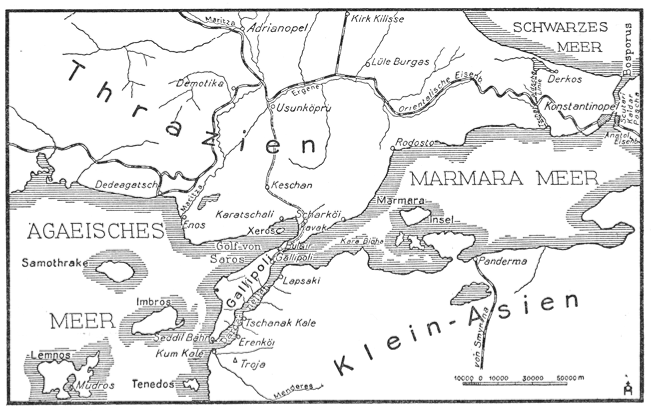
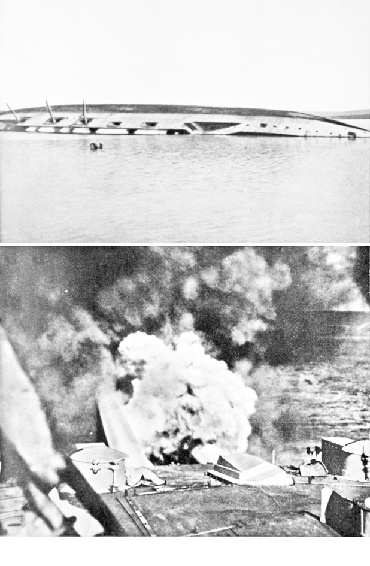
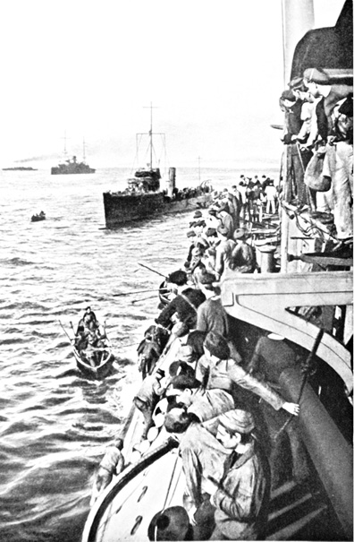
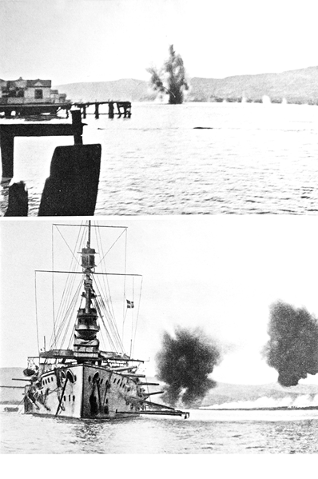
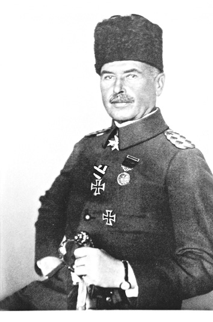
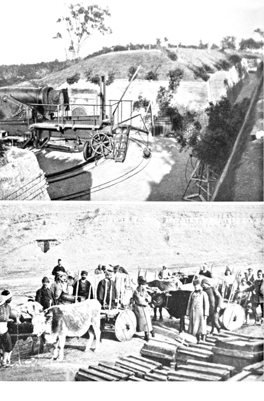
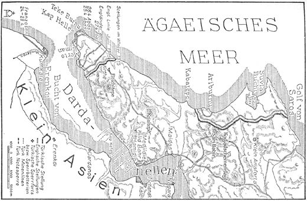

ONLAR GELİYOR
Haftalardır Çanakkale Boğazı’ndaki tabyalardaki gözcüler, her gece monoton gece nöbetini icra ediyor, makaslı dürbünlerle girişi bucak bucak tarıyor, Ege Denizi’nin karanlıklarını gözlemeye devam ediyordu. Bataryalar daima ateşe hazır hâlde bulunuyordu, projektörlerin ışık demeti Kilitbahir civarını, –Boğaz’ın en dar yerini– gün gibi aydınlatıyordu. Orada bir dizi basit mayın adeta kurbanlarının (gemilerin) altında bekleşiyordu.
Gözler her ne kadar ağrısa, aşırı yorgunluktan yaşarsa da bir an bile dikkat elden bırakılmıyordu. Aksi takdirde İngiltere’nin güçlü gemileri karanlık gecede savaş ilan etmeden kolayca tabyalara baskın düzenleyebilir ve cepheyi yarabilirdi.
3 Kasım’da gün ağarmasıyla güneşin ilk ışıkları doğu tarafını kızıla boyuyor, Çanakkale Boğazı’nın o yöne doğru akan sularının ve sahilinin üzerine doğru süzülüyordu. Gelibolu’nun tepeleri koyu vişneçürüğü rengiyle kaplıydı. Görüş berraklaşıyor, nöbetçi erler daha uzakları görebiliyordu. Bu arada nöbetçilerin bakışları birdenbire savaş gemilerinin havada uzanan dumanlarına ve sancak direklerine yöneldi. Boğaz girişinde yol alan İngiliz gemilerinin bacalarından çıkan kesif dumanlar ve sancak direkleri son zamanlarda ne kadar da sık görünür olmuştu.
Bugün sekiz büyük gemi ve birkaç torpido botu eskisinden daha da yakınlaşmış gözüküyor. 16 km mesafede bulunuyorlar. Devasa gemilerin üstünde aniden şimşek çakar gibi parıltılar oluşuyor ve derin bir homurtuyla ilk ağır obüs mermileri yaklaşarak vızıldayıp gidiyor.
Dış tabyalardaki her yerde -Seddülbahir, Kumkale ve Orhaniye’de- obüsler patlıyor, taşı, toprağı havaya savuruyor, âdeta yerin altı üstüne geliyor ve fasılasız bir gök gürültüsü Gelibolu’nun tepelerinden yuvarlanıp gidiyordu.
Kudretli İngiltere çelik yumruklarıyla kapıları dövüyor, bununla da Boğaz’a girmeyi çok arzuladığını ve transit geçiş istediğini göstermek istiyordu.
Bir atış talimindeki gibi uzun menzilli İngiliz topları kendilerine cevap veremeyen, verse de atışları ulaşamayan bu eskimiş bataryaların üstüne ateş açtı. Seddülbahir üzerindeki korkunç bir patlama havayı titretti. Ağır bir top, batarya avlusunun ortasında bulunan cephaneliğin toprak siperlerine isabet etti, aynı ikiz kuleden çıkan ikinci bir mermi onu takip etti ve atış siperlerini tamamıyla delip geçti. Hemen hemen 10 bin kg. kara barut ve onlarla birlikte 51 Türk topçusu ve üç subay da havaya uçtu. Kundaklanmaktan kurtulan bataryanın iki top namlusu kullanılamaz hâlde kumda gömülü olarak durmaktaydı.
Obüs mermileri dış tabyaları susturmak için mütemadiyen tabyaların üstünde patlıyordu. Ancak öğleye doğru ateş durdu. Yavaş yavaş gemiler gözden kayboldu.
Gelibolu’nun üzerinde tekrar sessizlik hâkimdi. Harap olan dış tabyaların istihkâm siperleri derhal düzeltilmiş ve çevrede obüs mermilerinin sebebiyet verdiği çukurlar derhal doldurulmuştu. Ağır kalibreli yüzlerce obüs mermisi sadece iki, eskimiş, pek de işe yaramayan topu kullanılamaz hâle getirmişti.
Tek düze yorucu gece nöbetleri devam ediyordu. Fakat bundan böyle İngiliz–Fransız donanmasının Boğazlardan geçerek yarma harekâtını deneyeceğinden de şüphe yoktu ve Boğaz’daki bütün askerler bu saldırının beklentisi içinde yaşıyordu. Düşman şimdi güçlü zırhlılarıyla gelse de galibiyet kolay olmayacaktı.
Onlar istihkâmları bir kaç haftadan önce ele geçiremezdi, tabya ve bataryalardaki sahil toplarının savaş gücü de zaten azdı. Buralar, modern istihkâmdan ziyade, bir müzeye ait olabilecek, modası geçmiş bir tophaneden başka bir şey değildi. Hususi hazırlıkların da birçok eksiği vardı. Bundan başka mühimmatta da epey bir noksan vardı. Ne mayın, ne de deniz hizmetleri için araç ve projektör mevcuttu. Telemetre, telsiz, telefon emirlerini ulaştıracak cihazlar ve diğer birçok elzem malzemenin eksikliği hissediliyordu.
Her şeyden önce acil durumlarda zarar ziyanı bertaraf edecek uzman eksikliği vardı. Bu sebeple Amiral Souchon memleketten gerekli personelin gönderilmesini rica etti. Konu çok acildir, çünkü tüm savaşın sevk ve idaresi için büyük bir öneme sahip olması gereken Çanakkale Boğazı konusunda her gün savaş kararı alınabilirdi.
Böylece Boğazlar Başkomutanı olarak Amiral Sounhon ve Usedom, Çanakkale Boğaz komutanı olarak Tümamiral Mertin idaresinde Berlin’de 26 subay ve her biri donanmanın seçkin, kabiliyetli ve güçlü adamlarından müteşekkil 432 kişilik bir hususi komutanlık oluşturuldu.
Böylesi büyük bir nakliyeyi Romanya’dan geçerek getirmek zor bir görevdi. Sivil giyimli mühendis ve isçiler, sahte pasaportla, tebdil-i kıyafetle, yola çıktı ve 29 Ağustos’ta salimen, İstanbul’a ulaştı. Hemen bir vapurun üzerinde karanlık bir gecede ve büyük bir gizlilikle sevk edilen kişiler önlerindeki Kilitbahir Tabyası’na ulaştı. O kişiler iki gün sonra iyi giyimli, mavi yakalı, haki asker ceketi içinde ve başlarındaki fesle halis muhlis Türkler olarak kendilerini takdim edebilene kadar dünyada tanınmıyordu.
Takımın sadece bir kısmı gemilere çıktı, diğer kısmıysa farklı özel gruplara ayrıldı: Topçular tabyalara yöneldi, mayın takımı komandoları oluşturuldu, kıyı boyunca alarm hizmeti organize edildi.
Bahriyeli topçular, hemen topları kendi gözleriyle tetkik etti. Böylesi müzelik parçaları hiç görmemişlerdi. Bunlarla büyükbabalarının çağında ateş edilmiş olmalıydı. Toplarla uzun süredir kaybolup giden zaman içinde olduğu gibi, nişangâh ve arpacıkla nişan alınabiliniyordu. Doğrudan atışların hedefi olan pirinç nişangâh, Türk arkadaşlar tarafından 10 yıllık süreç zarfında büyük bir gayretle öylesine tertemiz hâle getirilmişti ki bütün çentik izleri kaybolmuş ve mermi vinci ancak el faaliyetleriyle hizmet verebilmişti. Batarya telefonlarının aranması beyhudeydi, zira netice itibariyle cephanelik imkânları gözden geçirildiğinde mükemmel topçular gözlerine inanamadılar, stok öyle azdı ki… Bu arada ciddi bir durum da bu obüs mermilerinin ne kadar süre yetebileceğiydi ki kolayca hesaplanabilirdi.
Mayın komando erleri de kendilerini pek iyi hissetmiyordu. Onlar depolarda boş yere kullanılabilir mayın aradı. Evet, birkaç tane buldular, fakat mayınlar belli ki düşman gemileri için tehlike oluşturamayacak hâldeydi. Çok değişik modellerin oluşturduğu bu koleksiyon, daha ziyade son Balkan Savaşı’ndan kalma ganimet parçaları diyebileceğimiz Bulgar mayınları, eski pılı pırtılar gibi etrafa saçılmış duruyordu. Uzun araştırma ve soruşturmalardan sonra bir miktar daha mayının bulunduğu ve bunların daha çok boş mayın gövdesi olduğu tespit edildi. Bu mayınlar toprak üzerinde dağılmıştı ve orada “savaş abideleri” olarak bulunuyordu. Projektörlerin ve böyle birçok teknik eşyanın aranması da boşunaydı. Çanakkale Boğazı için her şey mahzun gözüküyordu, çok mahzundu. Bütün bu eksik malzemeler nereden temin edilmeliydi, mevcut değersiz savaş araç ve gereçleriyle dünyanın en büyük ve en modern donanmasının taarruzlarına başarıyla mukavemet edebilecek güçlü bir savunma nasıl hazırlanacaktı?
Ne sövüp sayıp sızlanmakla ne de ihmalleri eleştirerek zarar ziyana çare bulunamazdı. İş yapılması gereken yerde boş eleştiriler yakışık almazdı. Böylece erler büyük bir hararetle çok söz söylemeden derhal işe koyuldu, çünkü artık zaman kaybedilemezdi. Herkes yapabileceğinin en iyisini yapıyor ve görevinin başında bulunuyordu. Almanlar Türk askerleri arasında, gönüllü, anlayışlı, zeki ve heyecanlı öğrenciler ve silah arkadaşları buldu.
Büyük bir gayretle istihkâm tabyalarının iyileştirilmesi için çalışırken, topçu takımı gece gündüz uygulama ve tatbikat yapıyordu. Eksikliği giderilemeyen şeyler, topçu erlerinin sarsılmaz arzuları ve tam iştirakleriyle dengelenmeliydi.
Bu konuda Almanya’da bütün gerekli materyal bol miktarda mevcuttu. Gerçi Romanya üzerinden Türkiye’ye geçiş henüz açıktı. Fakat müttefiklerin ajan ve hafiyeleri bu ülkeyi istila etmiş ve bütün tren istasyonlarında casusluk yapıyordu, gece gündüz ayaktaydılar. Eğer güzel Alman altın külçeleri Rumen demiryolu memurlarının ve demiryolu bekçilerinin çantalarına girseydi bunun ne faydası olurdu? Çoğunlukla vagonlar ertesi sabah aynı yerde bulunuyor veya iz bırakmadan ortadan kayboluyordu. Müttefiklerin altınları sanki çok daha fazlaymış gibi gözüküyordu.
Savaş materyali dolu, sadece 19 vagon birkaç hafta zarfında salimen İstanbul’a ulaştı.
Cephaneyi ve teknik donanımı el altından gizlice Romanya’dan geçerek getirmek için çok uyanık olmak gerekiyordu. Bağdat Demiryolu için hazırlanan beton bloklar içinde makineli tüfekler saklandı, topların ve yedek parçalarının kapakları yağ dolu fıçıların tabanına istinat ediliyordu; birçok mal vagonu, eşyaların istif edildiği çift duvara sahipti.
Bu arada Alman kuryeleri de azimli bir şekilde Berlin ve İstanbul arasında hiç durmadan gidip geliyordu. Bu tam anlamıyla bir mekik trafiğiydi ve kuryelerin bagajlarına mayınlar için ateşleyici ve kontak kapakları gizlenmişti.
Parıldayan yüzleriyle torpido kaptanı Gehl ve donanma mühendisi Reeder, kurye yükünü teslim aldı. Onlar, şimdi en azından cüzi miktardaki müzelik parçayı kullanabilen mayınlar hâline getirebilecekti. Bunlar öncelikle seri ve parça hâlinde donanma depolarında bulunan 190 parçaydı. Hemen hemen pek az parça, geceleri Çanakkale Boğazı’nın istihkâmları önüne sabitlenmiş, atışa hazır duruma getirilmişti. Düşman gemilerinin ilerleyişini engellemek için gene de güçlü bir şekilde karşı durabilen, sadece 10 ince sıra mayın.
Her denizci için mayın ambargosu ihtimali ifade edilemeyen bir huzursuzluk yapıyor, denizcinin soğukkanlılığını yok ediyor ve azmini kırıyordu. Suyun yüzeyi her ne kadar sakin ve sessiz bir şekilde gözlerinin önünde aksa da denizci her an tehlikeyi sezer, her yerde pis şeytani kurşunların kurbanlarına pusu kurduğunu hisseder, her saniye mahvedici infilakı bekler. Korku, gözleri fal taşı gibi açar, gizlice fırsat kollayanların tehlikesi karsısında daha da açılır. Bu sebeple, İngilizlerin önceden arama tarama botlarıyla su yolundaki mayınları toplamadan kesinlikle gemilerini tehlikeye atmayacağı açıkça bellidir.
Eğer bu güçsüz engellerin görevlerini yapmaları isteniyorsa özellikle korunması gerekiyordu. Bu sebeple her yerden seyyar toplar toparlandı. -Mesela: depolardan, müzelerden, donanmanın kullanmadığı ve herhangi bir zaruret teşkil etmeyen yerlerden-. Böylece değişik özelliklere sahip olan bu bataryalar gayet iyi bir şekilde toprak altına saklandı, engellerin tahdit ettiği sahilin her iki tarafına yerleştirildi.
Apaçık gün ışığında arama tarama botları elbette ki gelmeyecek, siyah karanlık gecede gizlice yavaş yavaş yaklaşacaklardı. Eğer projektörler yeterli sayıda olsa karanlığı gün aydınlığına çevirmek kolay bir işti, ne yazık ki yeterli projektör yoktu. Gemilerden sadece uzaklara ulaşamayan tek tük (dağınık ışıklar) gönderilebiliyordu. Şimdi bu projektörler nereden temin edilecekti?
Tevekkeli Almanların icat kabiliyeti bütün dünyada bilinir. Burada da bir çıkış yolu bulundu. Eski ark lambaları bir yerde depolandı. Aynı zamanda İstanbul’da mağazalardaki bütün cep aynaları toplandı. Binlerce ayna atölyeye getirildi ve hemen hemen hiçbir bayan bir ayna bile bulamadı. Bu alışılagelmiş bir durumdu, fakat mühim olan yeni ithal projektörlerin ortaya çıkmasıydı. Sanatkârane bir şekilde bir araya getirilen küçük aynalar iyi bir reflektör oluşturdu. Derhal bu projektörler yerlerinde konuşlandırıldı ve geceyi aydınlattı. Böylesine hilkat garibesi bir şey kendi memleketlerinde olsa kahkaha atacaklardı ama bu projektörler burada etrafı aydınlatıyordu, Mühim olan da buydu.
(Boğaza döşediğimiz) mayınlarımızı en iyi şekilde koruyabilmek için boğazı yarıp geçen gemilerin gövdelerinde torpidolarıyla delik açacak bir torpido bataryası daha Çanakkale Boğazı’nın en dar yeri olan Kilitbahir’de konuşlandırıldı. Kıt savaş imkânlarına rağmen düşman donanmasının saldırılarına karşı koymak için yapılabilecek her şey imkânlar dâhilinde yapılmıştı.
Askerî kabiliyet ve savaş gücünü ortaya koyabilmek için bütün silahların planlı bir müşterek hareketi elzemdi. Buna sürekli tatbikatla ulaşılabilirdi ve bu tatbikat yapıldı. Gece gündüz alarm ve atış tatbikatları, haberleşme hizmetlerinde de mesafe ölçümleri ve uygulamalar dönüşümlü olarak yapılıyordu..
Serin hava, yeni bir esinti ile Çanakkale Boğazı’nın dış tabyalarına nüfuz ederek esiyordu. Alman denizcilerin serbestce hareket edebilmeleri sebebiyle Türkler ataletlerinden ve kader karşısında mani olunamaz sessiz mütevazılıklarından kurtuldular, coştular, mukavemet arzularını ve galibiyete olan inançlarını kuvvetlendirdiler.
İngiliz ve Fransız donanmaları 3 Kasım’da ilk kez dış tabyalara çelik mermiler yağdırdığında, Çanakkale Boğazı’nda durum böyle gözüküyordu.
Mesudiye’den Gelen Siren Uğultusu
Askerler şimdi boş yere hücumun tekrarını bekliyordu. Günler, haftalar akıp gidiyor, ama düşman gelmiyordu. Yalnız çok uzaklarda Çanakkale Boğazı’ndan bir aşağı bir yukarı gidip gelen düşman gemilerinin dumanları alçalıp yükseliyordu.
Bu çok iyi idi, evet onların gelmemesi çok iyiydi, çünkü kazanılan her gün, mukavemet gücünü arttırmaktaydı. Hedefini müdrik, enerjik bir sevk ve idare altında; ilkel, basit destek tabyaları sürekli tahkim edilmekte ve kuvvetlendirilmekteydi.
Her an ve her defasında savunmadakilerin meşgul olduğu soru şuydu: “Düşman neden gelmiyor, neden tereddüt ediyor?” Muhakkak ki bu tereddüdün, her haftası, her günü ve her saatinin tabyadakilerin savaş gücünü arttıracağını düşmanların da kesinlikle bilmesi gerekir.
Bugün bu tereddüdün en mühim sebebini biliyoruz: Londra’da, yeşil masa etrafındaki toplantıda hükümranların sadece hemfikir olmadığını değil, bilakis kudretli İngiltere’nin de o zamanlarda bir donanma saldırısına kendisini hazırlamak için yeterli gemisinin bulunmadığını da öğreniyoruz. Kont Spee von Coronel’in kruvazör filosunun galibiyeti tam manasıyla İngilizlere pek ağır geldi. Gururlu kruvazör filosu, tekrar ortadan kaybolmuştu ve kimse nerede ortaya çıkacağını, İngilizlerin hangi destek noktalarını tehdit edeceğini tahmin edemiyordu. “Büyük Filo”, Alman yurt filolarınca engellenirken Albion; gemilerini bütün rizikolu noktalardan topluyordu. Sonra kara muharebesi ve Kont Spee ve filosunun kendini feda edişi. Tevekkeli bu kahramanlar boş yere ölüme gitmedi, çünkü neticeleriyle askerî ve siyasi bir felaket hâsıl edebilecek olan Çanakkale Boğazı’nın o zamanlar zapt edilmemiş olmasını, bu kahramanların varlıklarına borçluyuz.

Kuşbakışı harita (İhata haritası)
Böylece Çanakkale Boğazı önlerinde ilk kez bir gönül açıcı sükûnet hüküm sürüyordu.
Hamidiye Tabyalarından birkaç yüz metre uzakta Dardanos Körfezi’nde filonun büyük hat gemisi “Mesudiye” demir atmıştı. “Mesudiye” eski bir muharipti, 1874’te inşa edilmişti, artık uzun süredir deniz savaşında kullanılmaya elverişli değildi ve de kulelerinde ağır topları yoktu.
Fakat hâlâ orta topçu sınıfı mevcuttu ve Alman denizciler bunları tekrar düzene soktu. Şimdi ise burada Dardanos Körfezi’nde ileri karakollarda “Mesudiye” mayın tarlalarının korunması için hazır durumda beklemekteydi.
16 Aralık pazar günü, öğle saatlerinde şiddetli bir patlama sesi, sessiz havanın kalbine saplandı. Tabya mürettebatı anında istihkâm siperlerine girdi. Hayrola, neler oluyor ki? Orada “Mesudiye” civarında âdeta alevlerin şimşek gibi aydınlattığı gökyüzüne uzanan, sınırsız su tepeleri yükseliyordu. Koyu ve kesif bir duman yavaş yavaş yana yatan, öldürücü yara almış olan gemiyi tamamen kaplıyordu.
Torpido İsabeti! Denizaltı!
Orada sahilin çok yakınında birkaç saniyeliğine bir periskop gözüktü. Gemi toplarının şiddetli seri ateşleri hemen bu yerde toplandı, çünkü toplar daha şimdiden sulara dalıyordu. Güverte dalgalar sebebiyle sular altında kalıyor ve gemi batıyor. “Mesudiye” gittikçe daha fazla bir şekilde dümen tarafına doğru yatmakta, direkler ve geniş akıntıda bacalardan geçerek uğuldayan su yüzeyinde şakırdamaktaydı. Bahriyeliler ümitsiz bir hâlde kaygan ve kaypak omurgada kurtuluşa erişmek için çabalıyor, kudurmuş selin içine kayıyorlar ki akıntılar onları sürükleyip götürmekte. Son bir hareket, ölüm irkilmesindeki gibi ani bir hareket, sonra da “Mesudiye” alabora oldu. Hâlâ bordonun ve omurganın küçük bir kısmı sığ sularda çıkıntı yapmakta, insanlar ümitsizce gemi kalıntıları ve molozlara sarılmakta. Botlar yardıma koştu, lakin ölümden kurtulan talihlilerin sayısı pek azdı.
Bir İngiliz denizaltısı çok güçlü akıntılara ve zor seyrüsefer şartlarına rağmen su altında kör bir yolculukla ilerleyip Çanakkale Boğazı’na sızmayı başardı. Böylece bir kısım mayın engellerinin arasından içeri sızarak “Mesudiye”ye torpido atmayı başarmıştı.
Mutlu bir dönüşe matuf, kısa bir bakışla gözünü budaktan esirgemeyen tereddütsüz bir teşebbüs ve neticede bu iş başarılmıştır.
Bir denizaltının başardığını diğerleri de başarabilirdi. Onların mayın engelleri altında Marmara Denizi’ne ve hatta İstanbul’a sızma teşebbüsünün planları ellerinde hazırdı. Ondan sonra ne olurdu? Evet, su yolundaki bütün nakliyat ve Türk donanması bizzat tehlikeye sokulacak ve bu hâl, savunma için felaket derecesinde neticeler doğurabilirdi. Bunun manası, şimdi iki kez daha müteyakkız olmak ve gözleri açık tutmak zaruretiydi.
Gece alçalmaktaydı. Ayın gümüş ışığı, Çanakkale Boğazı’nın o tarafa doğru tembel tembel akan sularında yakamozlar çizmekte, “Mesudiye” nin gövdesi hayal meyal aydınlanmaktaydı. En azından hâlâ işe yarayan bazı şeyleri kurtarmak için Türk istihkâmcıları orada çalışmaktaydı.
Onlar can veren gövdeden çıkarmışçasına mahzun bir uğultuyu, iniltiyi büyük bir hüzünle müşahede ediyordu.
Eğer Alman bahriyeliler kendilerini yakalamamış olsaydı, şarkın bu çocukları dehşet dolu bir hayalî korku yüzünden botlarına kaçmış olacaktı. Onlar öyle kolayca cinlere, hayaletlere inanmaz. Onlar şimdi gövdenin içindeki, uzaktan müşteki bir feryat gibi gayet belirgin bir şekilde gelen bu gürültüyü duymaktaydı. Evet, o zaman hayatta kalanlar, su geçirmez bir mekânda tıpkı bir tabuta kapatılmış gibiydi.
Bunların içinde felaket anında öğleyin yemekhanelerinde oturan ve aynı zamanda su geçirmez bölümleri tam zamanında kilitleyebilen 23 Türk subayı da bulunuyordu. Şayet bir subay bir köşede dikkatsizce yere düşürülen el sirenini keşfetmemiş olsaydı, onların mütereddit bir hâlde yüzeye (satha) vuruşlarının ve bağırışlarının bir tesiri olmayacaktı. Bu endişe verici şikâyet ondan kaynaklanmaktaydı.
Alman dostlar, bir saniye bile tereddüt göstermeden kurtarma faaliyetine koyuldu. Gövdenin çelik levhaları sertti ve kurtarıcıların ise elinde sadece basit keski, çekiç ve baltalar bulunuyordu. Fakat yumruklar güçlüydü, silah arkadaşlarının ölüm tehlikesinde olduğunun şuurunda olmaları onlara insanüstü bir güç bahşediyordu. Kapıları çalmak, çekiçlemek ve dövmenin oluşturduğu bu hiç bitmeyen tınlama sesi mehtaplı gecenin derinliklerine nüfuz ediyordu. Suyun altında bulunanlar da bunları işitebilirdi. Sürekli oksijeni azalan havaya rağmen, mutlak bir ölümden tam vaktinde kurtulma ümidi… Neredeyse kaybolan ümit yeniden ışıldar.
Saatler sonsuz bir şekilde o yöne sızmakta, gün ağarmaktaydı. O anda “Mesudiye”de sonsuz bir sükûnet oluştu. İçeri sızmak için açılan delik iyice büyütüldü. Kurtarma ameliyesi başarıldı. Son dakikada 23 Türk subay hayata geri döndü. Büyük bir şükran duygusuyla kurtarıcılarına sarıldılar. Bol bol temiz hava teneffüs ederlerken parıldayan ışıklarını görebilme umudunu kaybettikleri güneşin doğduğu doğu yönüne bakakaldılar.
Çift yönlü bir gayretle o andan itibaren gece postaları makaslı dürbünler vasıtasıyla suları gözetlemekte, her gece düşman denizaltılarını kollamaktadır.
19 Şubat
Bu arada şark kışı tesirini göstermeye başlamıştı. Fırtına adeta ıslık çalıyor ve insanın içine işliyordu ve fasılasız bir yağmur yağıyordu.
Tabyanın hiçbir yerinde kuru bir köşe kalmamıştı. Batarya avlusunda su dizi aşıyor, yüksek çadırlarda her şey yüzüyordu ve kimsenin vücudunda kuru bir yer kalmamıştı.
Bir ay geçmişti. Gece postaları boş yere gözlerini yordu. Hiçbir denizaltı, hiçbir periskop görünmüyordu.
15 Ocak’ta (1915) birkaç abluka bataryasında birdenbire canlanma, oldu ve “Maydos” Körfezi yakınlarında bir yerde kesif bir ateş oluştu. Bulunduğu yerin yönünü tayin etmek için periskopunu göstermesi gerekmeyen bir denizaltı fark edildi. Çünkü Boğaz’ın dar yeri burada bir büklüm oluşturuyordu. Top gürültüleri kesilmiş, gözetleme araçları yer araştırıyordu, hemen denizaltıyı keşfettiler. Berrak sularda deniz tabanındaki gövde belirgin şekilde tanınabiliyor ve hasarlı görünüyordu.
Deniz Üsteğmen Prens Reuss mavnalarla yaklaştı, derinliklere atılan su bombaları infilak etti ve düşmanı su üstüne çıkmaya zorladı. Teslim olmak için fevri bir telaşla ekip kuleden indi. Sonra Fransız denizaltısı “Saphir” batış siboblarıyla tekrar yüzeyden kayboldu.
Mevcut şüpheler, korkular sebepsiz değildi. Neredeyse bu denizaltı Marmara Denizi’ne sızmayı başaracaktı, çünkü mayınların altından geçmeyi başarmıştı. Bu düşmana yolu kapamak aslında ne kadar kolaydı. Birkaç metre kalibrelik gözü olan çelik ağlarla bu iş yapılabilirdi., Kuzey Denizi ve kanalda; filoların ve limanların emniyet altına alınması gereken her yerde uzun süredir böyle denizaltı ağları kullanılıyordu. Sadece Çanakkale Boğazı’nda hiç yoktu. Ağlar nereden temin edilecek veya nerede yaptırılacaktı, zaten her türlü materyalin eksikliği vardı?
Bunun için çok fazla kalın çelik halata ihtiyaç duyuluyordu ve bunlar İstanbul’un hiçbir deposunda bulunamıyordu. Oysa eksilen ağlar büyük bir dikkatle ikame edilmeliydi. Çanakkale Boğazı önlerinde en derin bir sükûnet durumunda olduğu gibi tam bir sessizlik hâkimdi. Düşman bunun nasıl bir cehenneme sebebiyet vereceğini önceden sezdiği için hâlâ kesin bir darbeye karar verememiş gözüküyordu. Ocak’ın ortasında İngilizlerin bir saldırıya hazırlandığı haberleri sıklaşmıştı.
Ege Denizi’nin Çanakkale Boğazı ağzında yayılmış olan güzel Yunan adaları Bozcaada, İmroz ve Limni bulunmaktadır. Bu adaların Yunanistan’a ait olması İngilizleri asla rahatsız etmemekteydi. Adalar işgal edilir ve filo destek noktası tahkim edilebilirdi. Şimdi adalarda canlı bir faaliyet hüküm sürmekteydi, adaya yeni savaş gemileri vasıl olmakta, nakliye gemileri gidip gelmekte, askerî hastane gemilerinin geldiği istihbarat edilmekteydi. Keşif uçaklarıyla kesin bilgi temin etmek ne kadar kolay olurdu. Fakat bu kesin bilgi yoktu. Sadece Seddülbahir’den keskin dürbünlerle bakıldığında, en yakınında bulunan İmroz adasında küçüklü büyüklü kaç tane gemi olduğu, gemilerin direk uçlarından fark edilebiliyordu.
Ancak hiçbir şey olmuyor, hiçbir şey sükûneti bozmuyordu. Günler akıp gitmekte, belirsizliğin ve bekleyişin hâkim olduğu kahredici günler sürmekteydi. Fırtına öncesi sessizlikteki gibi havada kurşuni bir ağırlık vardı.
Böylece bir ay daha bu aldatıcı sessizlikle geçti. Şubat ortası oluvermişti bile. Orhaniye Tabyası’nda güç sadece Alman denizcilerdeydi, gönüllülerden oluşan özel komando birliği mevcuttu, komutanları Deniz Üsteğmen Boermann ve emrinde 18 kişi vardı.
Orhaniye, bütün dış tabyaların en yükseğiydi, donatılmış, en uzak menzilli iki adet eski güçlü topu mevcuttu. Bunlar etkin mesafeyi haizdi. Orhaniye Tabyası’nın sadece 23 obüs mermisi vardı, sadece 23 atış… Bu tespit çok karışık duygularla ilk kez oraya ulaşan gönüllüler tarafından yapıldı. Bu mermilerle bir filonun saldırılarına karşı koymaları gerekecekti. Bu özel komando birliği, düşmana karşı koyacaktı, kendini ölüme adamışlardı.
19 Şubat sabahı gün ağarmaktayken Kıdemli Topçu Çavuşu Walla, kesif dumanların arasından çıkan ve Boğaz girişine yönelen iki gölge keşfetti.
Torpido Botları! Toplara!
İki mermi düşmana doğru uçtu. Atışların gürültüsü Çanakkale Boğazı’ndan gelenler olduğuna işaretti. Köpüren kıç dalgalarıyla iki eski dost hezimete uğradı.
Dış tabyada her şey kamp istasyonlarında durmakta ve beklemekteydi. Evet, beklemek onların kaderidir ve şayet fırtına koparsa sabr u sebat etmek, son atışa kadar dayanmak, sonuna kadar beklemek onların tek vazifesiydi.
Saat 8’e yaklaşıyordu. Uzaktan düşman geliyor, bu arada Amiral Garden armadasıyla yaklaşıyor. Arkalarında kruvazörler ve destroyerler uzun bir saldırı hattı oluşturuyor.. Suskun, mahzun ve tehditkâr bir tavırla kurşun grisi denizden içeri doğru süzülüyor. Muhafızlar oldukça mütereddit bir hâlde korkarak küçük mermi yığınlarını sayıyor. Ne kadar sayarlarsa saysınlar, mermiler çoğalmaz, her defasında birkaç düzine kalır.
Şimdi on iki savaş gemisi giriş etrafında büyük bir yarım daireye yerleşti. Bu devasa gemilerin üzerinde şimşekler çakıyor ve dört dış tabyaya çelikten dolular yağıyordu.
Kum ve taşlar devasa fıskiyeler gibi göğe savruluyordu, dış tabyalar Seddülbahir, Kumkale, Ertuğrul ve Orhaniye duman ve barut bulutu altında kayboldu.
İnsanlar ileri geri savruluyor, kum çığları ve toprak parçaları üzerlerine yağıyordu.
Siper al! 16 kilometrelik bu alanda tabyanın eski topları suskunluğa mahkûm edilmişti.
Sadece Üsteğmen Boermann, gözetleme yerinde ısrar ediyordu ve kendisiyle birlikte bir telefoncu ve bir Türk tercüman vardı. Onlar etraflarını kuşatan, patlayan mermilere, ateş ve çelik cehennemine aldırış etmiyordu. Gözlerinin önünde sadece düşman vardı ve yaklaşmasını bekliyorlardı. Bir ıslık, düdük ve homurdanma sesi havayı kaplıyor ve her saniye kulakları sağır eden gürültüleriyle patlamalar meydana geliyordu. Saatler öylesine geçiyordu ki… Aralıksız… Fasılasız… Güneş hemen hemen tepeleri aşmıştı, çelik fırtına kudurmaya devam ediyordu. Sanki yer yarılmak istermişçesine bir çatlama sesi sığınağı sarsıyordu. Ve peşinden gelen acı bir feryat... Gözetleme yeri sanki yok olmuş gibiydi. Ondan geriye hiçbir şey kalmadı, cesur Üsteğmen Boermann gözlerini sonsuza dek kapattı. Çanakkale Boğazı’nın ilk Alman savaşçısı olarak o sonsuza giden fedakârlık yolunda yürüdü, kanıyla Alman-Türk silah arkadaşlığını teyit etti, bu kardeşliğe mührünü bastı.
Gemilerde hâlâ alev demetleri titreşmekte ve tunçtan yapılan toplardan dış tabyalara çelik yağmuru sürmekteydi. Ancak gelip çatmakta olan gece, onları durdurabilirdi. Armada daha fazla yaklaşmaya cesaret edemeden akşamın alacakaranlığında kayboldu. O vakit, tabyalarda yeniden bir canlılık başladı. Her yerde insanlar yarı gömülü sığınaklardan çıkarak kendilerini kurtarmayı başardı gözlerindeki kumları ovuşturdu. İstihkâmların üzerinden atladılar ve büyük bir sevinçle -bir mucize eseri- hemen hemen bütün topların zarar görmeden kaldığını tespit ettiler.

Torpillenen “Mesudiye”

Hamidiye Tabyası
Ertesi gün, topları kum ve yıkıntılardan kurtarılmış olarak tekrar savaşa hazır hâlde buldular.
Mühim olan topların hâlâ ateş edebilmeleriydi. İstihkâm siperlerinin, batarya avlularının hırpalanması; obüs mermileriyle tarumar edilmesi; Gelibolu’nun güney tepelerinde eski Osmanlı sarayının bir bölümünün yıkıntılar içinde bulunması; heybet ve gururla yükselen kulesinde büyük deliklerin olmasına bakacak zaman değildi. İstihkâm siperlerinin elemanları, büyük bir gerginlik içinde denize bakıyor ve yaklaşmakta olan gemilerin duman bulutlarını keşfe hazır hâlde bekleşiyordu. Tahribat faaliyetine devam etmek için düşman elbet gelmek zorundaydı.
Ancak düşman gözükmüyordu. Sadece denizin dalgaları köpükten taçlarıyla yuvarlanıp geliyor, köpüklerini dik sahillere vurarak dağıtıyordu. Fırtına döven ağır bulutlar, deniz üzerinde aşağı sarkarcasına duruyordu. Sanki Neptün veto edercesine ve öfkesinden titreyerek üç çatallı asayı havaya fırlatmış gibiydi.2 Amiral Garden gelmeyecekti. O gelmeyecekti çünkü fırtına dinene kadar beklemek zorundaydı.
Mayınlar Gitmek Zorunda
Deniz ancak 25 Şubat’ta sakinleşti ve güçlü düşman hemen ikinci hücumuna başladı. Tekrar Kumkale, Seddülbahir ve Orhaniye güçlü mermilerin hedefi oldu, bombardıman öyle şiddetliydi ki yer bile sarsılıyordu. Sabah erken saatlerden öğleye kadar uzun namlular mermilerini kusuyor, gök gürültüsü adeta yuvalanıyor, siyah sarı dumanlar patlamaların alevleriyle aniden aydınlanıyor ve tabyaları kaplıyordu. Bir rüzgârın harekete geçirdiği sakin bir havada yoğun gri bir duman, sahil üzerinde süzülüyordu. Sadece fasılasız birbiri ardınca gelen patlamalar saniyeler içinde bu havayı parçalıyordu.
Burası bir cehennem olmalı ve bu cehennemde “Artık bir fare bile yaşayamaz” diye düşünür İngilizler. Geniş cephede olanlar (İngilizler) Asya sahiline doğru yönelir, gittikçe de yaklaşırlar. Fakat imkânsız olan gerçekleşir. Osmanlı muhafızları hâlâ yaşıyor, onlar bu cehennemde sonuna kadar sabretti, vadeleri gelinceye kadar bekledi. Her yerde Almanlar ve Türkler yıkılan sığınaklardan sürünerek çıktı, yıkıntıların hercümerç içindeki karışıklarından fırlayarak toplara doğru yöneldiler.
Mesafe 3.000 metre. Ateş!
İngilizler, tahrip ettiklerini düşündükleri tabyalardan üzerlerine çakan şimşekleri görüp mermi gürültüleri kulaklarını deldiği zaman gözlerine inanamadı. Orhaniye Bataryası’nın ikinci atışı tam isabet sağladı ve amiral gemisinin bacasının ön tarafının bir parçasını koparmaya yetti, iki tane daha isabetli atış geldi. Gemilerdeki topçular, büyük bir öfkeyle kendilerini inançla savunanlara hücum ediyordu. Şimdi artık hiçbir sütre yoktu, bomba yağmurunun altında cesur yürekler ellerinden gelen her şeyi yapmak zorundaydı. Topları en hızlı şekilde yükleyip ateş etmeleri gerekiyordu. Kendileri için zamanın daraldığının fevkindeydiler.
Toplar kısa süre sonra birbiri ardına sustu. Orhaniye Bataryası hâli hazırda susmuştu. Bir topun üst kundağı çalışmıyordu ve arızayı düzeltmek için verilen bütün uğraşlar boşa çıkmıştı. İkinci topa bir İngiliz mermisi isabet etmişti. Sağ kalan Alman savaşçılar ağır bir yürekle görevlerini terk ediyordu.
Kumkale hâlâ dayanıyordu. İngiliz – Fransız filosu bataryaların ölüm menziline girecek kadar yakındı. Böylesine bir uzun atış karaya kadar uzanıyordu ve Truva’nın klasik mekânın altını üstüne getiriyordu.
Düşman Ateşi Devam Ediyor
Güneş, Limni’nin arkasındaki tepelerden batarken dış tabyalar düşmüştü. “Denizin Kilidi” olan Seddülbahir artık yoktu. Kumkale ve Ertuğrul’un omuz siperleri yok edilmişti, topları kumların içine saçılmıştı. Çanakkale Boğazı’na giriş kapısı patlatılmıştı.
İlk zaferin mutluluğuyla Amiral Garden filosunu dayanak noktalarına geri götürdü. Buna rağmen amiral kendine tam güvenemiyordu. Karşılarındakinin cesur ve inançlı olduğunu, esas merkeze saldırının bu kadar kolay olmayacağını biliyordu. Şayet gemilerin amansız düşmanı mayınlar, kapının arkasında bulunursa Çanakkale Boğazı’nın girişinin açık olmasının neye faydası dokunacak? Tabii ki bütün su yolları bu mayınlarla tehlikeli bir yola dönüşür.
Gemileri kurtarmak ve ana tabyaları ele geçirebilmek için onların da öncelikle toparlanması gerekmektedir. Amiral Limpos’un tevdi ettiği bataryaların taslaklarıyla hakikat tamamen uyuşmuyordu. Şimdi gerçekten bu birkaç eski, savaş gücü pek olmayan topun mevcut olması gerekmez mi? Umulur ki pek değil!
Orada karşıda Almanların bütün imkânlarını ortaya koymaları göz ardı edilemez. Bu itibarla Türkler inançlı ve cesur askerlerdir, ölümü tamamen hiçe sayan fanatiklerdir. Onlarda eksik olan ise iyi bir sevk ve idare… Evet bu sevk ve idare de şimdi orada...
Tepelerde ve aşağılarda mutlaka bazı nahoş sürprizler saklıydı.
Amiral Garden’in, birçok sürprizi vardır: Dardanos tepesinde gemi toplarından oluşan 15 cm’lik yeni bir hızlı atış bataryası oluştu ve tepelerin arkasına gayet iyi gizlenerek Erenköy Boğazı’na, İntepe’ye ve Tenker’e (Alman) Üsteğmen Mehrle 15 cm’lik obüslerini ve Bulgar ganimet toplarını konuşlandırdı. Bu toplar eski (savaş) meydanında ateşlenmek zorunda kaldığında her an bütün yeni mevzileri ele geçirebilecekti ve sahillerdeki (deniz kıyısındaki) çukur alanlarda (çöküntülerde) mayın tarlalarının korunmasına yönelik yeni küçük engelleme ateşi yapabilecek bataryalar ortaya çıktı. Böylece birçok yeni mayın diğer mayınların yanına yerleşti. Rusların elinde bunlardan arta kalan daha birçok mayın vardı. Onlar tarafından İstanbul Boğazı önlerindeki bir tahliye esnasında denize de zarar verebilecek bazı kullanılabilir küçük mayın parçaları denize düştü. Evet, Türklerin de ancak çok az obüsü vardı. Türk donanmasının yeni organizatörü Amiral Limpus bunu tafsilatlı bir şekilde rapor ediyordu.
Bu tam anlamıyla gerçeği ifade ediyordu. Bu şimdiye kadar böyleydi fakat bundan sonra böyle olmayacak! İlk deniz lordu Winston Churchill ve diğer yetkililer Londra’da yeşil masa etrafında kararsızlıkları ve fikrî ayrılıkları yüzünden kıymetli haftaları Çanakkale’yi müdafaa edenlere bahşetmiş oldu, Amiral Garden de plansız faaliyetleri ve Londra’dan gelecek talimatları sonsuza dek beklemesi yüzünden değerli haftaları heba etti.
Bu haftalarda Deniz Albayı Bieper çok çalıştı. Ağır kalibreli obüsler ne üretilebildi ne de herhangi bir yerden temin edilebildi. Az olan stoku yetirebilmek için her obüs dikkatli kullanılmalıydı. Hafif ve orta toplar için mermi imalatı mümkündü ve bütün güç ve enerjisiyle Bieper çalışmaya koyuldu.
Yetersiz sanayi de göz ardı edilmeden, işyerleri cephane imalathanelerine çevrilmeliydi. Az sayıdaki cephane (mühimmat) fabrikası Alman personelin yönetiminde en üst verimlilik seviyesine ulaştı. Üç kademeli çalışma vardiyasıyla mermiler imal edildi. Uzun süreden beri vurdumduymaz ve üşengeç durumdaki Türk işçiler uyandı. İşletmelerde her yerde Alman ruhu, Alman düzeni ve nizamı hüküm sürüyordu. Böylece semere mermi şeklinde ortaya çıktı; zor yüklenen gemiler ve babafingolar3 Marmara Denizi’ni boydan boya geçerek arzulanan ürünleri Çanakkale Boğazı’ndaki bataryalarına getirirlerdi.
Amiral Garden, huzursuz bir gece geçirdi. Mayın tarama filolarının tehlikeli göreve başlayabilmeleri için dış tabyalar gerçekten tamamen bertaraf edildi mi? Evet, küçük birliklerin karaya inmesiyle bu kolayca bertaraf edilebilir, evet bu hemen yapılmalı, hatta hemen yarın.
Böylece Amiral seher vaktinde etrafında sır dolu bir örtünün bulunduğu, kendisi için galibiyet ve şan kapısını açacak olan Çanakkale Boğazı’na Ege Denizi’nden geçerek geldi ve sevk idareyi ele aldı. İlk olarak güzergâh gemisi “Majestic” in başarıyla girişi gerçekleşti. Onun güvertesinden bir zafer marşının yankısı duyuluyordu. Dış tabyaların üzerinde ölüm sessizliği hüküm sürüyordu. İstihkâmlardan hiçbir atış gelmiyordu ve hiçbir canlılık eseri yoktu.
Bahriyeli takımlar Kumkale’ye indi. Sadece yıkıntılar, yıkıntılar, yıkıntılardan başka bir şey yok. Birkaç eski müzelik top etrafta bulunmakta, diğerlerinin ise hâlâ kundakları üzerinde durmaktadır. İnfilak fişekleri çatırdamakta ve onları tamamen tahrip etmektedir. Şimdi bir kez daha Avrupa tarafındaki Seddülbahir’e bir göz atmalı.
60 kişi botlardan indi, yukarı tırmandı ve tepelerin arkasında kayboldu. Burada da hayat mahvolmuş gözüküyordu. Etraf sessiz ve sakindi.
İngilizlerin batarya arama-araştırma takımı gittikçe sahilden uzaklaşır. Birdenbire İngilizlerin yaylım ateşinin patırtıları duyulur, mermiler ıslık çalar ve her şeyden habersiz kalabalığın üzerine düşer. Bu düşmana karşı koyan Astsubay Mehmet Alioğlu ve askerleridir. Fişekleri yakında bitmiş olacak. Bu kahramanlar süngülü tüfekle üstün kuvvetlere saldırır. Takviye yaklaşmaktadır. Adam adama savaşılıyor. Uzun süredir biriken vahşi kin hiç kimseyi tanımıyor. İngilizler karaya çıkan askerlerinin dönüşünü boş yere bekliyor.
Gerçi Amiral Garden, şimdi dış tabyaların ebediyen susturulduğundan emindir.
Şimdi sıra mayın tarama botlarında onlar donanmanın galibiyetini kolaylaştırmak zorunda. Her yerden gelen balıkçı gemileri ve şilepler düzineler hâlinde hazır duruyor. Henüz gece olmuştu ki bahriyeliler tehlikeli vazifelerini ifa etmek için girişten süzüldü. Mehrle’nin obüsleri ve sahil boyunca duran engel bataryaları tetikte bekliyor. Projektörler parlıyor ve ışık hüzmeleriyle sızmak isteyenleri tespit ediyor. Mermiler küçük araçların üzerinde uçuşuyor, her taraftan ıslık çalarak geliyorlar. İngiliz kruvazörleri ve torpido botları hızla yaklaşıyor, savunma bataryalarıyla savaşa katılıyorlar. Bazı tarama botları dalgalarda batıyor, ancak her gece yenileri onlarla beraber kruvazörler destroyerler gözüküyor. Ancak uydurma projektörler ne de güzel çalışıyor. Suyun yüzeyi onların ışıklarıyla aydınlanıyor ve mermiler gaddarca mayın arayanların aralarına düşüyor.
Hayalet gibi onların etrafında bu projektör ışığında sanki bir fıskiye ormanı yükselmektedir. (Düşman) Kruvazörler mükemmel yapılı projektörleriyle yeraltındaki savunma bataryalarını keşfetmek ve yok etmek için boş yere çaba harcamaktadır. Onlar her gece tarama botlarının bütün mürettebatıyla nasıl battıklarını müşahede eden çaresiz şahitler olmak zorundaydı ve bizzat birçok derin yara aldılar. Elbette ki Amiral Garden de merhametsizdi. Ona göre her ne pahasına olursa olsun mayınlar temizlenmeli.
Düzinelercesi batsa da daima yeni araçlar (tekneler) donatılır. Ancak Albion’un yardımcı vasıtaları pek çoktur. Bundan dolayı gemiler mayın tarama komandolarıyla tekrar cehenneme yani ölüme doğru yol alır. Korkusuz denizciler (öleceklerini) biliyorlar, buna rağmen gidiyor ve ölüyorlar. Fakat onlar mayın aradıkları yerde esasen hiçbir mayının olmadığını bilmiyor. Düşüncesiz ve gayesizcesine meydana gelen bu hadisede büyük bir trajedi mevcuttur. Şayet engel ateşinden sağ salim kaçıp kurtulanlar aradıkları yerde esasen hiçbir mayının bulunmadığını ifade ederlerse, o zaman inanılacak hiçbir şey bulamazlar. Çanakkale Boğazı’nın yarısının bile mayınlardan temizlenmesi mümkün değildir! Ve de böyle oldu!
Sonra cehennem devam etti. Daima daha da ilerleyerek mayınları temizlemeyi sürdüreceklerdi. Çanakkale boğazı sahillerine yapılan atışlar hiçbir gece susmuyordu. Şimdi ise tarama botlarında yok olmaya koşan gönüllüler vardı.
Martın ilk günlerinde nihayet büyük savaş gemileri hem de güpegündüz ilerlemeye teşebbüs etti, öyle ki Hamidiye, Kilitbahir ve Dardanos tabyaları onların ateş çemberi içine girdi. Fakat esas hedeflerinde Mehrle’nin obüslerinin yok edilmesi vardı. Muhalifler (İtilaf güçleri) yerlerini keşfeder etmez, âdeta karşı tarafı mermi yağmuruna tuttu, öyle ki Mehrle’nin çelik mermileri tahmin edilemez bir şekilde tamamen bambaşka bir istikametten mırıldanmaya, ses vermeye başladı.
Üsteğmen Mehrle ve askerlerini yormak mümkün değildi. Onlar pek çok bedeni meşakkate katlanıyordu! Hiçbir gece uyku uyuyamadılar, elleri yara bere içindeydi, hemen hemen bir azaları bile sağlam değildi ve onlar her defasında ağır mermileri yolu ve patikası olmayan yamru yumru dağlık arazilerden, yıkıntılardan ve kumlardan geçerek taşıdı. Ertesi gün düşman gemileri girdiği ve pilotlarınca bir gün evvelden belirlenen yerler ateş altına alındığı zaman Mehrle’nin mermileri tamamen bambaşka bir istikametten yağmaya başlayacaktı. Güvertelerine isabet edecek atışlardan kaçınmak için gemiler daima hareket hâlinde bulunuyordu, bu yüzden isabetli ve güvenli atış yapamamaktan muzdariptiler. Esasen Mehrle’yi engellemek pek mümkün değildi. Bilahare onun obüsleri yüksek tepelerin arkasındaydı ve oradan atılan mermiler büyük bir kavisle tepelerin üzerinden savrulup gitmektedir, tepeler muhaliflerin modern uzun namlulu yatık ateşli toplarına nüfuz edilemez bir engel oluşturur.
Pilotlar gün boyu büyük bir gayretle çalışır, havada döner, gözcüleri çizer ve fotoğrafını çeker. Ancak orada itina ile haritalarına çizdikleri yerlerin sahte yerler olduğunu bir bilseler...
Üsteğmen Weber ajanlarıyla yorulmadan gece dahi iş başındadır, her yerde -sarp yamaçlarda, dağ geçitlerinde- basit havan topları, toprak istihkâmlar, sahra bataryaları ve modern yatık atışlı toplar yapılır.
Oysa havanlar sadece siyah olarak katranlanmış ringa balığı fıçıları, sahra bataryaları eski soba boruları ve yatay atışlı toplar sandık tahtalarından ve zorla yükseltilen ağaç gövdelerinden inşa edildiği, yükseklerde süzülenler tarafından fark edilemez. Doğrusunu söylemek gerekirse havadaki gözcülerden yerdekiler ustalıkla saklanmıştır.
Şayet Albion’un bu gururlu gemileri harekete geçer ve böylesi sahte mevziler için cephanelerini israf ederse istihkâmcılar acaba karşılarındakine zarar verdiklerine sevinir, insanüstü gayretlerinin neticelerini gözlemleyebilirler mi? Gayet tabi ki onlar için bu söz konusu değildi,zira mühimmatlardan ellerinde çok vardı. Ortadan kaldırılması gereken savunmacıların sahip oldukları güçsüz bataryalar muhafaza edildi ve nihai muharebeye hazır hâlde bekletildi.
Eğer düşmanlar mahirane bir şekilde ölü noktaları arar ve böylece bir hayli cephaneyi çarçur ederse bu ne işlerine yarar. Ana istihkâmlar asla bu hücumlara cevap vermek istemiyor, susuyorlar, çünkü onların birkaç düzine ağır obüsü mevcuttur ve çok kıymetlidir. Yalnız Mehrle, fasılasız işinin başındadır, o yakalanamaz ve vazifesinde başarılıdır.
Böylece çelik mermiler sözde mevzilere yağmaya başlar. Artık İngilizler esasen fevkalade işler gösteremiyor. Çok fazla atış yapıyorlar. Her defasında bu bataryaların üzerinde şimşekler çakıyor. İngilizler kolay lokma değildir. Cephede her yerde sadece yiğit Türkler İngilizlerin büyüsünü bozar. Türkler zaman zaman fişek kovanlarının ateşleme fitilini tutuşturur ve mümkün olduğunca çabucak siperlere zıplarlar. Kısa alevler yükselir ve kartuşlar yoğun bir duman üretir. Ateş eden bataryaları bu şekilde taklit ederek düşmanı yanıltırlar. Düşman ateş ettiğinde batarya değişimi yapılır. Bu “batarya değişimi’’ çok kolaydır: fişek kovanları omuzlara alınır ve “Marş marş” yürünür. Batarya, hemen fişek kovanını tekrar havaya diker ve birkaç yüz metre uzağa heyecanlı bir şekilde ateşler.
Böylece İngilizler, günbegün bu sözde bataryalarla ve Mehrle tarafından dâhiyane kullanılan obüslerle bu faydasız savaşın içinde kalır.
Amiral Garden hâlâ güçlü filosunun tam manasıyla kullanılmasına ve ana tabyalara genel bir saldırıya karar veremez. Bazı İngiliz zırhlıları ağır yaralarla akşam savaş alanını terk ederken, bu tabyalar eskisi gibi hasarsız ve kullanıma hazır durmaktadır. Geceleri (İngilizler) limanlarda ve komşu adaların körfezlerinde istirahat eder ve güvende olduklarını zannederler. Onların karakol gemileri sağ salim ön nöbettedir ve destroyerleri de denizde devriye gezmektedir. Eskiden beri güçlü olmaları mutat bir durumdu, onlar her ne kadar doğrudan bir tehlikeye maruz kalsa da huzurlarını ve güvenliklerini kim bozabilir: Türklerin denizaltısı yoktu ve modası geçmiş, uzakta konuşlanan torpido botları İngilizlere saldırmaya asla cesaret edemez. Onlar (Türkler)barış içindeyken dahi neredeyse yeraltındaki yerlerini terk etmedi, hele de güçlü İngiliz donanmasının kapılarına dayandığında buna cesaret etme ihtimalleri çok azdır.
Timurhisar4 Seferi
7 Mart gecesi zifiri karanlıktır. Yeniay vardır. Dar bir gölge yavaşça Çanakkale Boğazı’nın Avrupa sahillerinden süzülür, girişten geçer ve denizin karanlıklarında kaybolur gider. Bu, Kaptan Teğmen Freiherr von Fircks’in tecrübeli torpido bot kumandanlığının komutasındaki küçük, eski, liman torpido botu “Timurhisar”dır. Sadece 97 grostondur, hemen hemen 19 deniz mili hız yapabilir, güvertesinde 2 küçük 3,7 santimlik topu ve 2 eski torpido namlusu bulunmaktadır.
Yeni bir ruh bu küçük bota hayat verir; bu Amiral Touchon ve Alman askerlerinin Türk gemilerine büyük bir çaba ve aylar süren bir çalışmayla aşıladığı, sadece başarıyı hedefleyen saldırı arzusu ve kendine güvenin getirdiği bir ruhtur.
Bot böylece gecenin derinliklerine dümen kırar. Belki de kendini tam bir emniyet içinde sanan, Tenedos (Bozcaada) veya İmros (Gökçeada) civarında bulunan zırhlı düşman gemisine başarıyla saldırır ve yok edebilir. Belki… Şayet hızlı İngiliz destroyerini kendinden uzak tutabilirse ne ala, yoksa bu onun sonu olur.
Tam Seddülbahir girişinden geçerken, orada düşmanın en mühim görevlileri diyebileceğimiz altı destroyer ve bir kruvazör ortaya çıkar. “Timurhisar” sert bir dümen hareketiyle yine fark ettirmeden hemen sahilin alt tarafından maharetle içeri sızmayı başarır. Rotasını İmroz’a çevirerek ileri doğru kayar gider. Bulutlar çekilir. Berrak gecenin yıldızları açık açık parıldamakta ve soluk bir ışık yaymaktadır. Ne yazık ki yeniden büyük bir geminin silueti ortaya çıkar, o kadar yaklaşır ki bot fark edilir. İlk tanınma belirtileri görülür, ama sualler cevapsız kalır. Tam yol ileri… Makinenin gidebildiği kadar ve en kısa sürede takipçi, mutlu bir şekilde atlatılır. Ancak hemen Saros körfezi istikametinden ilk tanınma belirtileri verilmesine matuf bir çağrı gerçekleşir. Bu gece İmroz civarındaki düşman filolarına planlanan saldırı ile ilgili hiçbir şey yapılmaz. Düşman ikaz edilmiştir ve bu endişesiz sükûnetten uyanmıştır. Şayet İngilizler bir Türk gemisinin gerçekten buna cesaret ettiğini akıllarından geçirecek olsalar, elbette ki gündüz gayretli bir tarama (arama) yapacaklardır. O hâlde buradan uzaklaşıp Ege Denizi’ne doğru yol almalı. Seher vaktinde “Timurhisar” artık uzaklardadır ve Selanik Körfezi’nden pek de uzak olmayan bir yerde gizlenmiş olarak durmaktadır.
Boydan boya Ege Denizi’ne dümen kırarak Asya sahiline ulaşmak ve oradan da ortalık kararırken Tenedos’a (Bozcaada) doğru ilerlemek için öğleye doğru yeniden sefere başlanır.
Atıştan çok uzak olan burada elbette ki hiçbir nöbetçi beklenemez. İkinci gece olur, berrak bir hava vardır. Küçük Asya’nın (Anadolu’nun) yüksek sahilleri aydınlanır ve hemen Baba Burnu’nun altında sık bir şekilde duran ön savaşçı güçler de onlarla birlikte aydınlanır. Şimdi av tekrar başlar. Albion’un antenlerini ve kollarını (muhtemelen askerlerini) her yere uzanacak şekilde uzattığı görünür. Küçük “Timurhisar” ın motoru haldır huldur ses çıkarmaktadır, buharı yukarıda tutabilmek için kazancılar ağır ve zahmetli bir iş görmektedir. Düşman araçları giderek yaklaşmaktadır ve görünüşe göre küçük bir kruvazör ve iki destroyer vardır. Timurhisar, kuzeye doğru sert bir çark edişle kendilerini tehdit eden takipçilerin (düşmanın) felaketinden bir kez daha kaçıp kurtulmayı başarır. Kömür stokları tükenmiş ve akaryakıt pek az kalmıştır. Akaryakıtı tamamlamak ve sonra da ertesi gece tekrar Tenedos’a yönelmek için rota İzmir’e yönlendirilir.
Yeni gün ağarmaktadır. Artık “ Timurhisar” uzaklara, İzmir Körfezi’ne girmiştir. Orada “zafer” sınıfı bir hat gemisi ortaya çıkar, hemen onun arkasından kaygısız bir şekilde duran ve körfezi kapatan bir kruvazör ve büyük bir vapur vardır. Derhal nihai karar verilir: Hava kararır kararmaz buradan saldırılmalıdır. Fark ettirmeden ve sezdirmeden cesur bot gün boyu dar “Mavra Buni” Körfezi’nde saklanır. Bir fikir aşırı derecede yorgun askerleri kemirir durur: Bu iş başarılacak mı?
Akşamleyin, demir atan gemiler tekrar harekete geçer ve karanın hemen alt tarafında Karaburun civarına dümen kırar. Rüzgâr eser, şiddetlenir. Küçük gemi, dalgalı denizden zorlukla geçer. Denizden gelene karşı hiçbir korunak yoktur ve kimsenin vücudunda kuru bir yer kalmamıştır. Daima ileri ve içeriye İzmir Körfezi’ne doğru bir yöneliş gerçekleşir ki Körfezi’n projektörleri uzaktan parıldamaktadır.
Şimdi de onların arkasında hat gemisinin, kruvazörün ve vapurun siluetleri ortaya çıkar. İzmir Körfezi’nin projektörleri üzerlerinden geçip gittiğinde, onlar fırtınalı gecenin karanlığında gayet belirgin bir şekilde görülür.
Torpidolar açıkça bellidir. Eski uzman topçu öğretmeni olan Deniz Üsteğmen von Mellenthin, bizzat namlunun başında durmaktadır. Şimdi hat gemilerinin siluetleri oldukça yakın ve büyükçe bir biçimde görülmekte projektör ışıkları karşısında sanki bir nevi farklılık arz etmektedir.. İsabetsiz bir atış yapmak tamamen imkânsızdır.
“Haydi Torpido!”
Keskin bir çark (yöneliş). Nakliye gemisine yönelen ikinci bir torpido suyun içine düşer.
Askerler nefes nefese kulak kesilmiş, sonsuz gözüken saniyeler... Ancak sükûnet hâkim, hiçbir patlama havayı sarsmaz. Sadece kruvazörde bir canlılık oluşur, projektörler onun civarında parıldar ve o takibe başlar. Ancak o kruvazör hemen yok edilir ve 10 Mart’ta “Timurhisar” Çeşme Limanı’na demirler. Küçük bir Türk gemisinin bu denli güçlü bir düşmana kafa tutmaya cesaret etmesi, kendisinden böyle bir başarı beklemeyen resmî görevliler ve halk tarafından coşkuyla karşılanır. Hummalı bir telaşla kömürler, akaryakıt ve gıda maddeleri teslim alınır ve sevgi seli dağ gibi büyür. Güneş hemen hemen ufukta batmaktayken, bot tekrar harekete geçer. Hâlâ bir torpido namludadır ve düşmanı gidip bulması gerekir; bu başarılmalıdır, çünkü ateş almama-işlememe durumunda şaşkınlık büyük olacaktır.
Gece büsbütün karanlıktır. Rüzgâr hâlâ inlemekte, deniz yükselmektedir. İzmir’in projektörleri gece yarılarına doğru tekrar gözükür ve nihayet – bir ana uçak gemisi olan kruvazör ve vapur keşfedilir. Ancak hat gemisi eksiktir. Birinci başarı! “Timurhisar” tam saldırıya başlar, o anda birdenbire geminin 50 metre önünde bir ileri karakol gemisi ortaya çıkar: Dikkatlice ve fark ettirmeden geminin sol iskele tarafından dönme başarılır; kruvazöre yapılan saldırı akamete uğrar.
Kısacası kararlı bir şekilde şimdi ana uçak gemisi hedef olarak alınır. Son torpido 300 metre yukarıdan vızlayıp geçer ve boğuk bir patlamaya kulak kesilen görevlilerin kulaklarını zorlar. Hurra! Hurra! Öğleden önce mutlu bir şekilde İzmir Limanı’na demir atmak için “Timurhisar” ileri doğru hücuma başlar. Oradaki cesur insanlar büyük bir sevinç gösterisinde bulunur, çünkü İngiliz gemilerinin bombardımanlarını kesmesi ve tamamen kaybolmasını gemidekilere borçludurlar.
Ancak birkaç hafta sonra cesur “Timurhisar”ın arkasından kaderi yetişir. Yeni torpidolarla mücehhez olarak tekrar Ege Denizi’ne doğru açılarak büyük bir askeri nakliye gemisine saldırır. Torpidolar gene iflas eder, bu yaşlı Türk çelik sigara kâğıtları. Elbette ki silahları daima en üst seviyede tutmak ne kadar da önemlidir! Eğer başarı eksik materyalden ötürü akamete uğrarsa, bütün azim, soğukkanlılık ve savaşa hazır olma neye yarayacaktır!
Düşman kruvazörleri ve destroyerlerince takip edilerek kritik bir konumda görevini yapamayan makineyle (motorla) komutan botunu Yunan adası Chios’un (Sakız) kayalık sahiline yöneltmek ve düşmanın ateşi altında tayfaların karaya çıkmasından sonra patlatarak tamamen yok etmek zorunda kalır. Böylece küçük “Timurhisar” kısa savaş kariyerini sona erdirdi. Onun kahramanlık hikâyeleri Çanakkale Boğazı’nı savunanlara kadar uzanmakta, onları coşturmakta, aynı ruhu takiben onları teşvik etmekteydi.
Kasırga Kopuyor
Bu arada Amiral Garden, Çanakkale Boğazı’nda bir adım bile ilerleyemedi. Martın ikinci yarısına kadar hiçbir gemi, tabyalarla ve Mehrle’nin obüsleriyle savaşı devam ettiremedi. Az miktarda zarardan başka, Mehrle’nin bataryaları savaşma gücünden hiçbir şey kaybetmedi. Sadece sürekli ağır bir ateş altında bulunan Dardanos Bataryası’nın, toplar zarara uğramadan kalsa da subay ve ekip yönünden kayba uğraması şayanı teessüftür. 11 Mart gecesi özellikle bir canlılık vuku buldu. Kruvazör ve destroyerlerce himaye edilen tarama botları, projektör ışığında boş yere mayınları bulup çıkarma zahmetinde bulundu. Toplar bütün gece her iki tarafta gürleyip durdu. Sabah tan ağarırken düşman geri çekildi. Savaş meydanında hâlâ yavaş yavaş mürettebatlarıyla suya batan 3 mayın tarama gemisi görülebilmekteydi.
Amiral Garden hâlâ bütün savaş gücünün taarruz için hazırlanmasına karar verememektedir. O kara çıkarma ordusunun desteğini talep eder, buna karşın Churchill filoların derhal hücuma geçmesini ister. Teşvik edici telgraflar gönderir.

İtilaf Devletlerinin askerleri

İtilaf Devletlerinin askerleri
Rusya acilen Boğazların açılmasında ısrar etmektedir. Rus orduları hali hazırda Karpatlar’da bulunmakta ve acilen Macaristan kapılarına son saldırı için silaha ihtiyaç duymaktadır. Akdeniz limanlarında birkaç haftadır Rus orduları için büyük miktarda savaş malzemeleriyle yüklü kargo (yük) gemisi, şilebi beklemektedir. Ruslar Boğazları geçemez, çünkü Garden de aynı gayeyi başaramamıştır.. Tükenmiş, sinirleri bitmiştir, umduğu kolay galibiyet, onun için uzaklara gitmiş, hedefi, Türk muhafızların ve onların Alman ustalarının mukavemet arzuları karşısında paramparça olmuştur.
Amiral Garden hasta olduğunu bildirir ve İtilaf güçlerinde Amiral de Robeck komutayı alır. Bütün filoda o gözü pek biri olarak bilinir. O galibiyeti başaracaktır!
17 Mart’ta savaş konseyi Tenedos‘ta toplanır. Genel saldırının hemen takip eden gün başlaması kararı alınır.
Çanakkale Boğazı’nda ise fırtına öncesi sessizlik hâkimdir. Savaş tecrübesine sahip askerler kati neticenin yaklaşmakta olduğunun farkındadır. Bunu yürekten hissederler. Artık bundan böyle hiçbir hazırlık, inceden inceye düşünülmeden yapılmamalı, on defa düşünülüp bir defa hareket edilmelidir.
Son âcizane yardım malzemeleriyle mukavemet gücünün kuvvetlendirilmesi gerekmektedir. Sadece ağır mermilerdeki eksiklik üzerlerinde büyük bir yük oluşturmaktadır. Eğer son mermi de işe yaramayan, üzücü bir şekilde ateşlenirse ne olur? Ardından bir felaket patlak verir, daha sonra da İstanbul yolu açılır ve Türkiye kaybeder.
Alman Amiral von Usedom birçok riziko alır, İstanbul Boğazı’nın istihkâmlarının bütün cephanesini temin etmek emrini alınca, cesur bir oyun oynar.
O gece İstanbul’da hemen hemen hiçbir otomobil ortaya çıkarılmaz. Hepsi haczedilir ve o araçlar. ağır mermileri Çanakkale tabyalarına sevk eder. Eğer Rus filosu İstanbul Boğazı önlerinde gözükürse, o zaman toplar susmak zorunda kalır. Rus filosu gelmeyecek, gelemez. Ve Rus filosu eğer elini silahsız boğaza uzatacak olursa, Goben cephede öne atılmalı ve girişe mani olmalıdır.
Çanakkale Boğazı bataryalarında şimdi sadece parlayan, gülen yüzler vardır, çünkü onlar düşmanı artık layıkıyla karşılayabilir. Bu umutları yükselten, pembe hayalleri uyandıran ikinci bir sebep daha vardır. Bütün savaş süresince, ölü noktalardan tabyaları ateş altına almak için düşman gemilerinin Erenköy Körfezi’nde nasıl toplandıkları (tertip oldukları), hiç bir şey yapılamadan, gözlemlenmek zorunda kalındı. Keşke orada birkaç mayın kalabilseydi, sadece birkaç tane... Bunlar kurbanları uzun süre beklemezdi.
Gemiler körfeze girdiklerinde Türk askerleri küçük bir mayın tarlasının olmasını arzulardı ve o tarla şimdi karşılarında duruyor!
Doğan günün ilk soluk şafağında mayın gemisi “Nusret” Alman gönüllülerle Erenköy Körfezi’ne sızar ve Gemi Mühendisi Reeder’in idaresinde5 İngilizlerin burnunun dibine mayınları yerleştirir. 26 mayın, 26 şeytani mermi, bütün bir muharebenin kaderini içinde saklayan, göz açıp kapayıncaya kadar düşmanı yakın galibiyetten yenilgiye sürükleyebilecek mayınlar...
Mayınların Döşenmesi Tanrı’nın Bir Lütfu Gibidir
Bu mayınlar çok uzaktan geliyor, açık motorlu sandallarla, 500 deniz mili uzunluğundaki bir yolu geride bıraktılar. Trabzon’dan İstanbul’a kadar, inadına bütün fırtınalardan geçerek geldiler. Hemen hemen iki hafta geçmemişti ki bir sabah birçok karamayın,Trabzon önlerinde dalgaların üzerinde dans ediyordu. Ruslar normalde mayın döşemede pek mahirdir. Yalnız burada ilk defa başarılı olamamışlar, mayınlar deniz yüzeyinin altında kaybolmamış, suya gömülmemişlerdi. Trabzon civarındaki özel komandolar tarafından tehlikelerle dolu, fedakârane bir çalışmayla sudan çıkarılan ve getirilen mayınlar şimdi burada Erenköy Körfezi’nde duruyor.
Şimdi Çanakkale Boğazı’nın savunucuları muhaliflerini karşılamaya hazırdır. Günbegün düşmanların görünmesini beklerler. Evet, onların kaderi beklemek ve denize yorgun gözlerle bakmaktır. İngiliz – Fransız donanma kuvvetlerinin büyüklüğü onlar için meçhuldür. Düşman destek noktalarının limanlarda ne yaptığına da vâkıf değildirler, çünkü bir tek uçak bile onların emrinde değildir, bir tane bile.
Amiral de Robeck’in savaş şurasını topladığı gün olan 17 Mart’ta hiç beklenmedik bir şekilde gökyüzünün yükseklerinden, bir hediye, bir lütuf iner. Bu, Romanya üzerinden serdengeçti bir uçuştan sonra iniş yapan eski, hafif bir uçaktır. Nihayet bir uçak… Artık Çanakkale Boğazı’nın gökyüzünde gözleri vardır!
Yeni günün sabahında motor vızıldar ve uçak ilk istihbarat uçuşu için havalanır. Bu mükemmel bir ilkbahar günüdür. Güneşin ilk ışıkları çiçeklerle bezenmiş muhteşem arazilerin üzerini kaplar, muhteşem minareleriyle huzur dolu köylerin ve Gelibolu’nun vahşi, kesik sarp kayalıklarının üzerine yayılır. Uçak yükselir, sürekli helezonik bir uçuşla gökyüzünün koyu maviliklerine dalar ve görüş menzilinden çıkar. Daha yükseklerde motor çalışmadığı için 1.600 metrede pilotlar, mavi sularda büyük gri bir leke gibi beliren Tenedos’a rastlarlar.
Orada demir atmış kırkın üzerinde gemi bulunmaktaydı, her tip ve büyüklükte gemiler. Şimdi bu devasa donanma hayat bulmuş gözüküyordu. Altı çelik zırhlı dev gemi, yola koyuldu. “Queen Elizabeth” in başında Amiral de Robeck bulunuyordu. Onun amiral forsu açıkça fark edilebilmekteydi. İleride “Irresistible” vardı. Geminin gövdesindeki açık renkli yerler tanınabilmekteydi. O yaralar belli ki Kont Graf Spee’nin6 kara savaşında gemide açtığı yaralardı.
Fransız gemileri de demir aldı ve amirali takip ettiler. Şimdi “Bouvet” aydınlatma uçağını keşfetti, beyaz bulutlar etrafında zıplayan şarapnellerini yukarı gönderdi. Sürekli yeni gemi üniteleri harekete geçti, direklerde sinyaller uçuşmakta ve Albion’un mağrur sancağı veya üç renkli Fransız bayrağı antenlerde dalgalanmaktaydı.
Onlar Geliyor! Onlar Geliyor!
Şimdi tabyalara geri dönelim, motordan elde edilebilecek ne varsa alalım ve rapor yazalım.
Tabyalardaki ve bütün uzun sahil boyunca uzanan bataryalardaki herkes şunu bilmektedir: Önlerinde büyük genel saldırı vardır, büyük gün başlamaktadır. Çanakkale Boğazı savaşçılarının sabrı uzun süre sınanamaz. Havada uzanan dumanlar ortaya çıkar, iki, dört, altı, on her defasında daha da fazlası; hemen hemen bütün ufku kaplarlar ve artık sayılamazlar.
Ön cephede dörderli bir kademelendirme yapılır, on iki savaş gemisinin dumanı tütmektedir, sayısız küçük araç, torpido botları ve mayın tarama gemileriyle çevrili olarak Çanakkale Boğazı’na girer.
Trampetler ve borular bütün bataryalardakileri toplara çağırmaktadır. Gemilerin devasa topları siyah namlularıyla tehditkâr bir şekilde sabitlenmiştir.
Saat 11.30’da fırtına kopar. Donanma ve kara bataryaları arasında kuduran en büyük muharebe başlamaktadır. Gri- siyah duman bulutlarıyla çevrili, kırmızı -sarı ateş şimşekleri içlerindekini kusmaktadır. Bir hayli uzaklığı sebebiyle suskunluğa mahkûm olan tabyaların üzerine demirden dolular yağmaktadır.
“Siperlere!” diye sesler batarya komutanlarının hoparlörlerinden yankılanır. İğrenç haykırışlı çelik mermiler yaklaşarak vızıldayıp gelirken, kuru ve kulakları sağır edici bir çıtırtıyla patlarken, göğüs duvarları sıkıştırılmış (bastırılmış) durumdaki batarya ekibi savaş çağrılarına koşmaktadır. Her saniye binlerce infilak parçası havaya doğru dairevi hâlde fırlamakta, toprak parçaları ve taşlar oradakilerin üstüne düşmektedir. Yer bir depremdeki gibi sallanmakta, siyah topraktan fışkıranlar göğe doğru yükselmektedir. Hamidiye Tabyası yanında bulunan küçük liman şehri Çanakkale’ye uzaktan yaylım ateşleri sıçramaktadır. Her köşe ve kenar ateş kaynamaktadır. Evler, kart yığınları gibi çökmekte bütün yollar toprak ve küllere batmaktadır. Fakat gemiler etrafında da bir canlılık oluşur: Mehrle’nin obüsleri her iki sahilden de görünmektedir. Fıskiyeler savaş gemilerinin etrafında yükselmekte, atışlar güvertelerine ve içerilere isabet etmektedir. Yaralı yerlerden duman bulutları çıkmaktadır. Patlayan mermilerden ve sık sık güverte ve komutan köprüsü üzerine boşalan fıskiyeler yüzünden suyun adeta altı üstüne gelmiştir. Onlar düşmanın görüş alanını daraltır, atışları zorlaştırır.
“Daha yaklaşın” diye Amiral de Robeck emir verir.
Hamidiye Tabyası Komutanı Deniz Binbaşı Mossidlo yavaş yavaş ama sürekli giderek azalan mesafeyi tespit eder.
Tabyasında sadece Alman ekipler vardır ve onlar en yakın zamanda ne yapabileceklerini gösterecektir. Mesafe 12 bin metre. Şimdi tamam!
“Siperlere…” onun kısa komutu hoparlörden yankılanır.
Nihayet! Siperden cehenneme! Fişek kovanlarını takip ettiği ağır mermiler bir anda namludadır. Tamam! Ateş! Şimdi mermi üstüne mermi namluyu terk etmektedir. Dardanos Tabyası ateş etmektedir. Avrupa tarafındaki kardeş batarya aynen katılır, Mecidiye Tabyası da ateş eder, Dardanos Tabyası da.. Görevliler ağır ağır soluyarak çalışmakta ve gayretle çabalamaktadır! Bulutsuz gökyüzünden gelen güneş hararetli bir şekilde yakmakta, tenlerden ateşli bir seyelan fışkırmakta. Etrafta alev sellerinin ve patlayan devasa bombaların ateş sütunlarının oluşturduğu bir seyelan…
Düşünmeden, etrafa bakmadan sadece düşmanı göz hapsinde tutarak namluyu doldurmak ve ateş etmek... Hiçbir söz söylenmiyor. Yağmur gibi ter akmakta. Bu cehennem konseri giderek daha da iğrençleşiyor, gemiler etrafında sürekli harikalaşan tam bir ateş püskürtme dansı. Bu vızıldamalar, ıslık çalmalar ve haşırtılar düşman rotasına giden 35 cm’lik Türk toplarının derin homurtularını sesleriyle bastırmaktadır. Mehrle’nin obüslerinin bulunduğu en dış tepelerden istihkâmın kalbine kadar sahil ateş, duman ve sis altındadır, -sanki bir kuduran yanardağ gibi.
Saat: 12.00. Savaş gürültüsü sürekli artmakta ve kasırgaya dönüşmektedir. Çanakkale yanmakta, Kilitbahir yanmakta, Hamidiye yanmakta, duman ve toz bulutları tabyayı kaplamakta. Onlar susuyor.
Tabyalar düşmüş gözüküyor, Amiral de Robeck zafer kazanıyor, gemileri birkaç isabet almasına rağmen hâlâ savaş yeteneğine sahip.
Daha da yaklaşın, daha da! Zafer göz kırpmaktadır!
Fransızlar ön cepheye! Seyir için güvenli bir mıntıkayı temizleyebilmek için mayın arayıcıları öne!
Böylece Fransız Amiral Guepratte dört savaş gemisiyle -“Gaulois”, “Charlemagne”, “Bouvet” ve “Suffren”- ateş altındaki İngiliz zırhlılarının yolunu açar. Şimdi onlar 7.500 metre yakındadır. Bataryaların ve tabyaların üzerine yeni bir çelik fırtınası boşalır. Tabyalardaki kuvvetli patlamalar havayı sarsar. İnsanların bu cehenneme dayanması ve yaşaması mümkün gözükmemektedir. Bataryaları kaplayan gri buluttan kızıllıklar çıkmakta: Alman ve Türk topçular tekrar yerlerine geçer ve ateş ederler. Düşman çok erkenden zaferini ilan etmiştir. Daha zamanı değil, daha uzun bir süre zafer zamanı değil.
Yalnız toplar kum yığınları sebebiyle kuma ve yıkıntıların altına gömülmüştü ve mermilerden tasarruf yapılmalıydı, çünkü mühimmat çok azdı. Fakat Fransızlar şimdi güvenli bir hedef olabilecek derecede yakındaydı. Şimdi oldukça çabuk bir şekilde Fransız gemileri galibiyetten ne denli uzak olduklarını kendi vücutlarında hissetmek zorundaydı.
Büyük bir şaşkınlık ve huzursuzluk içinde Amiral de Robeck müttefiklerinin ağır durumunu gözlemler. Onlara destek olmak için bizzat kendisi yaklaşır ve ağır hasar görmüş Fransız donanmasını ateş hattından çekmeyi düşünür. O anda birdenbire güçlü bir patlama, savaş gürültüsünü bastırır. Direk yüksekliğindeki bir infilak bulutu hat gemisi “Bouvet”in üstünde yükselir. 35 cm’lik bir mermi gemide delik açar ve cephaneliklerden birini infilak ettirir. Pupa (kıç) yavaş yavaş çökmekte, batmakta, baş tarafı havaya doğru yükselmektedir. Kurtarma botları Türk atışlarının infilakından etrafa serpişen sular sebebiyle ölmekte olan devasa gemiye ulaşmaya boş yere çabalamaktadır.
Bir torpido botu ve arama botu büyük bir cesaretle tam yol ileri yaklaşmaktadır. Boşuna… Dalgalar “Bouvet”in üstünü örtmektedir. Onlar obüslerin atışlarından isabet alan “Bouvet”i derinlere doğru takip ederler.
Savaşçıların kuruyan gırtlaklarından büyük bir hurra! (Yaşa! Bravo!) çıkar.
Görünen o ki birkaç dakika içinde sanki düşman savaşı kesmek isteyecektir. Onların topları tekrar gürlemeye başlar. Savaş yeniden kudurmaktadır. Alman – Türk savunmacılar cevap vermekte gecikmez ve Fransız gemilerini ağır bir müşkülata uğratırlar. Bayrak gemisi “Suffren” ağır yara almıştır ve su üzerinde durmaya çabalamaktadır. “Gaulois” her an bir felakete sebebiyet vermek üzere olan mayın barajlarına çok yaklaşmıştır. Hamidiye’deki askerler neredeyse nefesini tutmuş beklemektedir. Onlar ilk mayın sırasının durumunu tam olarak bilmektedir. Geminin güvertesindeki yıkıntı yığınları açıkça görebilmektedir. Geminin kıç tarafında büyük bir delik, kalmıştır.
Orada artık “Gaulois”in kıçındaki bir su fıskiyesi mavi ilkbahar göğüne doğru yükselmektedir. Bir mayın infilak etmiştir. Dümen ve makineler susmuştur. Akıntıyla birlikte ölümcül bir yara alan gemi yavaş yavaş savaşan filoların arasından geçerek çıkışa yönelir. Şilepler “Gaulois”i korumaya alır ve üsse getirmeye çabalar. Bunu başarmalıdırlar, çünkü Tenedos’tan pek uzak olmayan bir yerde bu gemi karaya çıkartılmalıdır.
“Queen Elizabeth”in üstünde sinyaller gezmektedir. Amiral de Robeck, geri kalan Fransız gemilerinin nöbet değişmesi için son yedek filosunu çağırır. Filo tam yol Boğaz’a ilerlemektedir.
Şimdi zirvesine ulaşmış gözüken savaş, eksilmeyen bir şiddetle büyümeye devam etmektedir.
De Robeck bugün karanlık basıncaya kadar her ne pahasına olursa olsun kati neticeye ulaşmak istemektedir.
Artık saat öğleden sonra dörttür. Her defasında, güçlü topların atışları altında nihai başarı için mühim vazife ifa edecekleri umuduyla mayın arayıcılar öne sürülür. Elbette ki Mehrle’nin obüsleri ve küçük baraj bataryaları uyumamaktadır.
Denizde ve karada demir namluların naraları bir saniye bile susmaz ve çok güçlü bir gök gürlemesi gibi Gelibolu’nun Boğazlarında yuvarlanır durur. Tabyalarda ise cehennem kaynamaktadır.
Hamidiye Tabyası âdeta bir krater denizi olmuştur, mamafih onun topları bir mucize sayesinde şimdiye kadar zararsız ziyansız kalır. Fakat şimdi 30,5 cm’lik bir mermi bir topun üstüne düşer. Parçalanan kısımlar havaya doğru yüzlerce metre savrulur. Ondan sonra gelen bir isabet kaideyi (ayak) takip edip koruma duvarı diyebileceğimiz traversi delip geçer. Hafif yanmış saçlarla, yanık yaralarıyla kaplı olarak cephanelikteki askerlerin bakiyesi dışarı fırlar.
Sükûnet! Sükûneti Koruyun! Ateşe devam!
Topçu komutanı Papesch, ağır yara alarak olduğu yere düşer. Şimdi topun başında on iki yerine sadece üç kişi vardır. Etraftaki alaycı şarkılara, ıslıklara, çılgın patırtılara ve patlamalara kulaklar tıkanır. Teğmen Naz, yaralı bir şekilde yere yığılır, traversten kayar. Fişekçi Kümmerling yukarı zıplar, onun yerine geçer.
“Ateş edin, doldurun, ateş edin, her şeyi yapın, en son yapabileceğinizi de yapın!” Nefesler ağır ağır solunmakta, yorgun akciğerler kükürt ve kesif dumanla dolu havayı içine çekmekte zorlanmaktadır.
Düşmanın demir doluları (mermileri) giderek daha da azgınlaşmaktadır. Havaya yükselen kumlar topları örtmekte, insanın gözüne ağzına kaçmaktadır. Çabucak birkaç kova su kamaya ve namluya dökülür. Su hararetli namludan akarken cayırdamakta, cızırdamaktadır.
Tamam! Ateşe devam! Aman Allah’ım, bu cehennemde nefes alınıp verilemeyecek mi, bunun sonu kestirilemeyecek mi ki? Güneşin tepelerin arkalarından batması daha iki saat sürecek- güneşin tepelerin arkasından kaybolması iki saat…
Sessizce hedefe ulaşılmalı, sessizce ateş etmeli. Şimdi düşünmemeli.
Ve düşmanın orada olduğunu asla tahmin edemeyeceği mayın barajı Erenköy Körfezi’nde miydi? Gemiler daha önceden büyük bir kanaatkârlıkla bu körfezde tertip almışlardı. Gerçekten bu son kozun oynanmaması mı gerekirdi?
Ancak şimdi, şimdi “Irresistible” ve “Inflexible” doğrudan bu mayın tarlasına dümen kırar. Savunmacıların toz topraktan simsiyah olmuş yüzleri aydınlanır, nefesler tutulur. Şimdi hemen işe koyulmalı. Bu arada “Inflexible”in yanında bir su sütunu şaha kalkar ve sivri bir alev göğe yükselir. Ağır yarayla yan yatan gemi kendi imkânlarıyla ateş hattından uzaklaşmayı ve daha güvenli sulara ulaşmayı başarır. Ancak şimdi de “Irresistible” kaderine koşmaktadır. Devasa gemi hareketsizce durur kalır. Sürekli sağ tarafına doğru yatmaktadır.
Hurra! Ateş! Ateş! Bu zaferdir!
Ölümle güreşen gemilerin mürettebatını kurtarmak için aceleyle torpido botları yaklaşmaktadır. Dardanos Bataryası’ndan vahşi bir ateş ve Mehrle’nin obüsleri bu araya dalmaktadır. Şimdi de “Ocean” hat gemisi ateş hattından arkadaşlarını uzaklaştırmak için yaklaşmaktadır. Ancak “Ocean” da kaderinden kaçamamakta, onu da bir mayın yakalamaktadır.
Gövdesindeki yarık, bu geminin de mevziini terk etmek zorunda kalacağı kadar büyüktür. Tayfalarca terk edilen ve ateş altında kalan gemi kontrolsüz bir vaziyette akıntıyla sürüklenir ve sonrada gece Truva açıklarında batar. “Irrestible”nin enkazı yavaş yavaş sürüklenerek gelir ve tekrar Dardanos sahasına girer. Batarya tekrar atışa başlar ve nihai olarak imha etmek için fasılasız bir şekilde sıkılan mermiler “Irrestible” ye yeni yaralar açar.
Tıpkı bir köpek sürüsü gibi diğer savaş gemileri oradan Dardanos’un üzerine saldırmaktadır. Savaş gümbürtüleri bir kez daha misli menendi olmayan bir şekilde şiddetlenmektedir. Bir çelik mermi, bataryanın üstüne düşer. Bunların sayısı takriben dört bin kadar devasa mermi olsa gerek. Cesur Türk komutanı Hasan Mevsuf Bey yere yığılır. Ve askerlerin her biri birbiri ardına birbirlerinin üstüne düşer. Dardanos’un üstündeki ateş giderek seyrekleşir, bataryalar tamamen susana kadar ateş fasılaları giderek daha da büyür. Artık bu efsanevi bataryada kimse yaşamamaktadır.
Yeni güç tabyalardaki savunmacıların gevşeyen kaslarını germektedir. Ateş, ateş! Silah başına, son gücünüzü kullanın! Namlulardan ateş fışkırıyor.
Zafer! Zafer!
Düşman ateşi daha da matlaşır, belirsizleşir. Galibiyetinden emin olan Amiral de Robeck geri çekilir. Geminin kıç kulelerinden sürekli ateş ederek filolar savaş alanını terk eder ve büyük bir umutla ve birkaç gemi eksikle Ege Denizi’ne doğru dümen kırarlar.
Savaş gürültüsü yavaş yavaş sönmekte, gece bastırmaktadır. Asya sahilinden pek de uzak olmayan bir yerde Dardanos civarında bir zamanların gururlu gemisi olan ama şimdi terk edilen “Irrestible” nin enkazı batmaktadır.
Hâlâ sürekli olarak tabyalarda ve bitişiğindeki köylerde şiddetlice süren yangınların yansımaları gecenin gökyüzünü aydınlatmaktadır.
Zafer için hayatlarını feda eden Alman ve Türk savaşçılar mezara taşınır.
Çanakkale muhafızlarının bu gece buldukları uyku kısa ve tedirgindir. Onlar sabahın ilk ışıklarıyla bataryaları atışa hazır hâle getirmek için tekrar ayaktadır. Büyük ihtimalle yeni bir saldırıyla ilgili bütün ihtimaller hesaba katılmalı ve orada gelen düşmanın karşısında muhafızları bulmalıdır.
Etraf yerin altının üstüne geldiği bir haldeydi. Bataryaların önünde ve arkasında içinde yer altı sularının biriktiği devasa kum çukurları açılmış ve kalça boyuna kadar derinliğe ulaşmıştı. Yarılan ladin ve zeytin ağaçları, tahrip binalar ve yıkılan minareler dehşetli ve acı savaşın şahididir. Boğazı’n her iki yakasında kurulu tabyaların hemen yanı başındaki mahzun ve heybetli iki kale olan Kilitbahir ve Kale-i Sultaniye sürekli mağrur, zararsız ve ziyansız bir şekilde savaşı seyretmektedir. II.Mehmet tarafından 15. yüzyılın ortasında inşa edilen kale, kireç taşından yapılan devasa boyuttaki duvarları, kuleleri, mazgal dişleri, mazgalları ve güçlü yapısıyla “Quenn Elizabeth” in 38’lik mermilerinden bile zarar görmedi. Onlar yüzyılların akışı içinde bütün depremlere ve saldırılara mukavemet etti. Dün de 800 kilo ağırlığındaki İngiliz mermileri duvarlara ve kulelere çarparak güçsüz bir şekilde sekmişti.
Tabyaların bataryaları da savaş gücünü muhafaza ederek kalabilmiştir ki bu netice üzerinde nihai tesiri olan bir durumdur.
Karadaki Top
Personel ve maddi kayıplar şaşılacak derecede azdır: 114 kişi -ki bunların arasında 22 tanesi Alman’dır-, öldü veya yaralandı. Mevcut toplam 176 toptan büyük – küçük kalibreli sadece dokuz tanesi kullanım dışı kalmıştı, çünkü mermi atışları top yatağının ya önüne ya da arkasına isabet etmişti.
Burada tekrar eski topçu atasözünün doğruluğu ortaya çıkmaktadır: “Karadaki bir top su üstünde duran toptan 10 misli daha sağlam durur!”
Obüsler Üsteğmen Mehrle’nin dâhiyane yönetiminde hiçbir kayıp vermedi. Onun ekipleri arasında sadece üç ölü ve on bir yaralı sayılabilir.
Yüzlerce Rum ve Ermeni işçi mermi hunisinin doldurulması ve yarılan toprağın düzeltilmesiyle meşgulken derhal bütün tabya ve bataryaların da savaşa hazır hâle geldiği bildirilir.
Varsın düşman şimdi gelsin. Düşman, şimdi muhafızları tekrar savaşa hazır hâlde bulacaktır.
Saatler gergin bir bekleme içinde geçmektedir-düşman gözükmüyor. Gelecek günlerde de Ege Denizi sakin ve sulh içinde kalacak ve İngiliz donanmasının havada uzanan hiçbir dumanı gökyüzünün ve denizin maviliğini bulandırmayacaktır.
Liman von Sanders
Muhafızlar kendi aralarında bir ferahlık hisseder, çünkü onların üstünde ağır bir endişe vardı: cephane eksikliği. Son mermiler atılmış olsaydı, bütün fedakârlıklar ve en büyük kahramanlıklar bir işe yarayacak mıydı?
Savaş 18 Mart’ta cephane stoklarının büyük bir kısmını yutmuştu ve bu boşluklar doldurulamıyordu. 5 adet 35,5 cm’lik topun her biri için sadece 50 adet mermi kullanıma hazırdı, 11 adet 24 cm’lik topun her birine sadece 45 atış düşüyordu. Tek başına gemilerin kalın zırhlarını delip geçebilen uzun menzilli infilak mermileri hemen hemen tüketilmişti. Obüsler ve engel bataryaları mühimmatının yarısını yakıp tüketmişti. Düşman armadasının böylesi bir hareketsizliği, böylesi bir ölüm kalım savaşı ve birbiri ardına patlayan toplar, son mermi namlusunu terk ettiğinde sükût edecek, susmak zorunda kalacaktı.
Ve Sonrası
Sonra mayın engellerini kim koruyacak, Marmara Denizi’ne ve bilahare İstanbul’a giden yolu düşmana karşı kim muhafaza edecek? Kim? Türk filosu mu? Elbette ki “Goben”in önderliğinde Marmara Denizi girişinde düşmana göğüs gerecek, galip gelecek, fakat o bunu yapamadı. O sadece kahramanca ölebildi.
Ancak yine de çelik zırhla kaplı devler gelmiyor, artık arslan inine girmeye hiç cesaret edemiyorlar. Amiral de Robeck, bu yegâne fırsattan faydalanmadan geçmiştir. Gözü pek kumandan, gemilerini tekrar büyük bir güçle harp talihinin terazisine atmaya karar veremez, çünkü güçlü dünya imparatorluğunun itibarı için ikinci bir hezimetin tersine olan inkişafı çok büyük olabilir. Mayınlar, mayınlar, her yerde önlerinde kurtuluş olmayan, hiçbir merhamet tanımayan bu aksi gülleler, mermiler...
Ve zafer ne kadar da yakındı, sanki dokunulacak kadar yakın! Böylece 18 Mart, Türk tarihine övünç günü olarak girer.
Her zaman için bu zafere sonsuz destek veren yönetici personelinden son topçusuna kadar Alman Çanakkale savaşçılarının bir övünç günü olacak.
Şimdi ne olacak? Düşman hangi kararları alacak? Kararın biri aşikârdır: Şayet denizler hâkimi İngiltere, güçlü donanmasının ikinci bir başarısızlığını hazmedemezse “denizlerin anahtarına” karşı bu seferden de tamamen vazgeçmesi imkânsız bir şeydir. Ve Rusya? Evet, Ruslar zorluyor, kendilerini müttefiklerinden ayıran kapıların parçalanmasını talep ediyorlar. Evet, harp araç ve gereçleri tükenme noktasına gelirse onlar milyonluk ordularını nasıl galibiyete götürebilirler? Sonuç itibariyle sopalarla ve taşlarla hiçbir savaş kazanılamaz.
Kesin olan bir şey vardı, İngiltere geriye kalan tek yolu da deneyecek bir orduyu Gelibolu’ya çıkartarak donanmanın desteğiyle tabyaları zorlayacak ve böylece donanmanın ifa edememiş olduğu hedefe yaya olarak ulaşacaktı.
İngilizlerin Gelibolu önlerindeki adalarda bir kara ordusu konuşlandırması, her gün sürekli yeni nakliye gemilerinin savaş malzemesi ve birlik getirmesi epeydir bilinmektedir.
Her gün, evet kazanılan her saat savunma tedbirlerini kuvvetlendirmek için çok değerlidir. Elbette ki geçen haftalarda çok şey yapılmıştır: Gelibolu sahili ve Asya kıyısı boyunca top çukurları uzanıp gitmektedir. Taburlar ve bölükler sahil açıklarında gücü ellerinde tutmaktadır. Kendilerine bizzat hareket kolaylığı sağlayan zor geçiş noktalarında nöbet beklemektedir.
Böylece Türk güçleri küçük kısımlara ayrıldı, hiçbir yerde, karaya ayak basan düşmanları kuvvetli bir karşı mücadeleyle denize dökmeye hazır olan birlikler yoktu.
Gelibolu’ya yapılacak bir kara çıkarması tehlikesi o kadar yakındı ki bu yakınlık yeşil masa etrafında müzakere etmek için bile vakit bırakmadı. Derhal harekete geçilmeliydi, büyük bir acele ve enerjiyle bir günü bile boş yere geçirmeksizin savunma tedbirleri alınmalıydı.
Önceleri beş tümenden oluşan 5. Osmanlı ordusu teşkil edildi ve bu ordunun başkomutanlığına askerî heyet başkanı Mareşal Liman von Sanders atandı. Eline Osmanlı İmparatorluğu’nun kaderi teslim edilen bu kişi bir Alman’dı.7
25 Mart 1915’te mareşal, Gelibolu’ya girer. Yükseklerden bütün araziyi inceler, savaş beklentisi olan bütün yerleri gözetler. Sağda Ege Denizi’nin dalgaları kayalıklara çarparak dağılmakta, solda ise Çanakkale Boğazı’nın suları o yöne doğru akmaktadır. Önlerinde ise yükseklikleri 340 metreye kadar yükselen Gelibolu Yarımadası’nın dağlık kısımları uzanmaktadır.
Yağmur binlerce yıldır hemen hemen tamamen bitkisiz olan dağlık yöreyi bambaşka bir şekle sokmuştur. Bardaktan boşanırcasına inen yağmur kütleleri humus tabakasını alıp götürmüş, kireç taşını yalçın kayalıklara ve dağ sırtı hâline dönüştürmüştür. Mareşal bir bakışta yüzlerce dağ geçidi ve Boğaz’ın, müdafilere hangi uygun himaye ve korumayı sunacağını bilir, ama o da bu ülkenin ne kadar az cadde ve yolunun buradan geçtiğini görür.
Kel, taşlı dolambaç kayalıklar arasında ara sıra gizlenmiş duran, yağmurun humus tabakasının sürükleyip götürdüğü nehir ağızlarında vadiler ve ovalar vardır.
Çöldeki vahalar gibi burada zeytin korulukları ve çiçeklerle kaplı çayırlar selam vermektedir. Bu arada birkaç mütevazı küçük köy etrafa serpilmiştir. Orada güney ucun kuzey kıyısında Morto Körfezi ıssız ve dik sahilleriyle gayet belirgin bir şekilde tanınabilmektedir. “Bu körfez düşmana hangi korunaklı alanı sunabilir?” Sonra Gelibolu’nun güneybatı ucu düz, dalgalı platolar olarak uzanmaktadır. Bu bölüm bir düşman çıkarması için ne kadar uygundur! Tedricen yükselen arazi, dehşetli top ateşi altındaki gemiler tarafından alınabilir ve savunmacılara hemen hemen hatırı sayılır hiç bir koruma sağlamaz.
Bilahare mareşalin bakışları düz ve yumuşak (narin) tepeli arazileriyle hemen hemen Ren yöresini hatırlatan Çanakkale Boğazı’nın Küçük Asya kıyılarına doğru yönelir. Resmî yerleşim birimleri içtenlikle sizleri selamlar.
Liman von Sanders, bütün arazinin görünümünü adeta beynine yerleştirir. Omuzlarında büyük sorumluluğun ağır yükünü taşıyan bu adamın kafasında binlerce fikir sıkışmıştır.
Karşı saftaki General Hamilton neye teşebbüs edecek, kara çıkarması nerede olacaktır? Bir veya birkaç yerde mi, Asya sahilinde mi, Gelibolu’da mı veya Bolayır sırtlarında mı?
Bir şey aşikârdır: General Hamilton bir veya birkaç şaşırtıcı, hızlı bir çıkarmayla hâkim tepeleri işgal etmeyi deneyecek, çünkü bu tepelerin hâkimiyeti galibiyetin anahtarını oluşturacak. Bu tepelerden, donanmanın yok etmeyi başaramadığı tabyalar sırtlardaki ağır bir kuşatma atışıyla ele geçirilebilir ve yok edilebilir.
Mareşalin kararı kesinleşir: Birlikler öylesine konuşlandırılıp gruplandırılmalıdır ki her zaman ve her tehlikeli yere yollanabilmeliler.

Mareşal Liman von Sanders

(Üstte) Hamidiye Tabyası’ndaki 24 cm’lik top. (Altta) Türk mühimmat nakliye kolu.
Liman von Sanders, büyük bir enerjiyle kendisine verilen vazifenin ifasına yönelir.
Bu gayretli adam, yorulmaksızın daima işinin başındadır ( ) Her yerde mareşalin iyi bir süvari olduğu ortaya çıkmaktadır. Otomobille veya atta, gemide veya yaya her siperi, her köşeyi teftiş etmekte, talimatlarının uygulanmasını bizzat incelemekte ve sürekli daha yüksek icraatlar gerçekleştirmek için etrafını teşvik etmektedir. Esasen o artık hiç uyku düşünmez, çünkü her gece haritalara abanmış olarak görülür, söken şafak onu tekrar yeni bir teftişte hazır bulur.
Her gün düşman armadası ufukta görülebilir ve böyle kıt miktardaki yardım malzemeleriyle başarılı bir savunma icra etmek için yapılması gereken birçok şey vardır.
Yeni siperler, en çok tehlike arz eden noktalarda kazılır, makineli tüfekler ve küçük toplar düşmanın etrafını kavrayacak tarzda konuşlandırılır, çelik tel engeller kurulur, kumsala basınca patlayan mayınlar döşenir, sığ sulara; engelleyici, insanın ayağına dolaşan teller yerleştirilir. Bütün işçi taburları yol ve köprü yapımında görevlendirilir. Bu taburlar güvenilmezliklerinden ötürü sadece gayrimüslim tebaadan, -Türklere yönelik düşmanca zihniyetlerinden dolayı aktif orduya dâhil edilmeyen Rum, Ermeni ve Yahudilerden- oluşuyordu. Gün boyu hemen hemen çalışma mümkün olmadı, çünkü düşman pilotları sürekli gelecekteki savaş bölgesi üzerinde tur atmakta ve bombalarını bırakmakta ve İngiliz kruvazörleri kıyı boyunca ileri geri duman tüttürerek her küçük grup, hatta teker teker süvari veya yayalara ateş açmaktaydı.
Hummalı ve fasılasız bir şekilde ancak geceleri çalışılabiliyor. Tüm Gelibolu bir karınca kümesine benziyor.
Erzak ambarları oluşuyor, sahra fırınları kuruluyor, tam vaktinde mühimmat ve donanım unsurları temin ediliyor.
Alman idaresindeki Türklerin hazırlıklarının hangi mühim ilerlemeleri kat ettiği en belirgin şekilde Amiral de Robeck’in henüz intikal eden General Hamilton’a kendi düzenlemesiyle ulaştırdığı şu düşündürücü yazıdan anlaşılabilir. Bu yazıda şöyle denmektedir: “Gelibolu Yarımadası yıldırım hızıyla ele geçirilmektedir. Binlerce Türk bütün gece kunduz gibi siperlerde çalışıyor, kapalı tahkimat tesisleri ve dikenli teller döşüyorlar. Gerçi hâlâ tek biri dahi ortalıkta gözükmüyor, fakat her sabah onların gece faaliyetlerini ispatlayacak deliller ortaya çıkıyor. Tüm çıkartma alanlarına şimdi siper hatlarıyla hâkim olunuyor ve etkin biçimde ateş altında tutuluyor… Almanlar açıkçası Türkleri ellerinin içine almışlar ve diğer bütün çalışmalar oldukça mükemmel bir şekilde yapılmaktadır.”
Bu arada Türk tümenleri de uzun süren pasifliklerinden silkinmiştir. Onlar haftalarca tek düze kıyı hizmetlerini ifa etmişler, haftalarca sadece siperlerde bulunmuşlar ve yürüyüş yeteneklerini tamamen yitirmişlerdi. Bu yürüyüş ve hareket kabiliyeti bir birliğin farklı, mekân olarak oldukça uzak ve tehlikeli noktalara yerleştirmesi için ilk şarttır.
Her gece arazi tatbikatları ve sıkı yürüyüşler gerçekleşmekteydi. Düşmanı yeni gruplanmalar hakkında tamamen yanıltmak için birlik kaydırmaları da gece yapılırdı. Hakiki mermilerle yapılan ve aylardan beri ara verilmiş eğitimi teşvik etmek için atış yerleri inşa edildi.
Türk askerleri coşkuyla görevini yerine getirmekteydi, çünkü ne mutlu ki onlar arasında bütün gücünü ne için harekete geçirdiğini bilmeyen kimse yoktu. Türk, özellikle Anadolu insanı, demirden oluşmuş gibi muhteşem bir askerdir. Anadolu dağlarındaki hayat şartlarının zorlukları; sağlıklı, sebatlı insanlarını bir nefer olgunluğuna eriştirir. Bu açıdan onlar misali görülmemiş bir iddiasızlık ve kanaatkârlık sahibidir. Gönüllü, sabırlı ve Avrupalılarca hemen hemen hiç anlaşılamayan insanlardır. Ölümü hiçe sayma olgunluğuna sahiptirler., Değişmez kadere olan kaya gibi sağlam inançlarıyla bu özellikleri taşımaktaydılar. Bu ölümü hiçe sayma olgusu, savaş meydanlarında ölen kahramanlara Cennet’i vaat eden dine dayanmaktadır. Bu muhteşem askerlerde eksik olan, birlik içinde, gayesini müdrik bir sevk ve idaredir. Onların itimada şayan bakabilecekleri ve yağmur çamur demeden peşinden gidebilecekleri amirlere ihtiyaçları vardır. Ve bu önderler şimdi oradaydı, sadece Alman ustalar değil, Türk subaylar da oradaydı.
Orduya yeni bir silah girdi- el bombası. Burada da Türk askeri anlayışlı (çabuk öğrenen) bir öğrenci olarak ortaya çıktı. Türk askeri derhal, varlığı, özgüveni ve savaş maneviyatını daha da yükseltecek olan bu tehlikeli savunma ve saldırı silahının bütün püf noktalarını öğrendi.
El bombaları! Aslına bakarsan bunlar da birdenbire nereden ortaya çıktı? Bu işte muhakkak ki Almanların parmağı vardır. Ve onların bunları yapıp yapmadıklarına gelince: İstanbul’dan bakıldığında, her yerde boş konserve kutularını toplayan Alman bahriyelerinin refakat ettiği yük arabalarının yürüyüşleri görüldü. Böylece bazı merak uyandıran sorular cevapsız kalmış oldu. Öyle ki bazı alaycı yaklaşımları hazmetmek zorunda kaldılar. Onlar konserve kutularının neden toplandığını gayet iyi biliyorlardı:
Bunlar belli ki Kaptan Piepers’in fabrikaları ve atölyeleri içindi ve orada bunlardan el bombaları meydana getirilecekti. Kesinlikle hiçbir cephede teneke konserve kutularından yapılmış el bombaları yoktu. Onun görüntüsü de ehemmiyetsizdi. Önemli olan infilak etmeleriydi ve onlar tenekeden el bombasını yaptılar!
Ordunun eğitimi her geçen gün sağlam bir şekilde ilerlemekteydi. Sadece fevkalade yoğun bir savaş gücünü geliştirecek yeteneğe sahip olacak bu ordunun biraz zamana ihtiyacı vardı.
Başkomutanlığın emriyle görevlendirilmesinden birkaç gün sonra Liman von Sanders Albay Kannengiesser’e açıkladı: “Ah, keşke İngilizler bana sadece 8 gün verse!” Mevzilerin inşası çalışmasıylave ordunun eğitimiyle çarçabuk 4 hafta geçiverdi. Şimdi 60.000 kişilik bu ordu düşmanı karşılamaya hazırdı, ancak görevliler gece gündüz boş yere denizi gözetlemekteydi.
Nisan başında komşu adalarda toplanan İngiliz – Fransız çıkarma ordusunun hâlihazırda Hint ve Avustralya birliklerinin bulunduğu Mısır’a kaydırıldığı haberi geldi. General Hamilton kalbi sızlayarak birliklerinin nakliyatına karar verdi, çünkü geciktirilen, her günün karaya çıkışı daha da güçleştireceğini ve daha çok kayba sebebiyet vereceğini gayet iyi biliyordu. Ancak küçük sebeplerin bazen büyük tesirleri olur. Her gün dünya imparatorluğunun üstünlüğünden mütevellit birliklerle nakliyatlar, atlar, cephaneler, savaş materyalleri ve iaşeler adalara ulaşmaktaydı. Fakat General Hamilton sevineceği yerde, kuduruyordu: Her vapur bordosunda ya birlik veya cephane, ya da belirli bir savaş materyali taşıyordu ve derhal adaların mekân olarak oldukça dar dar limanlarında korkunç bir sandık, kasa ve denk (balya) karmaşıklığı hüküm sürüyordu.
Bu çaresiz karışıklık içinde kimse yönünü tayin edemiyordu, tam aksine her gün bu karışıklık daha da büyüyor ve keşmekeş hâline geliyordu. Nihayet her şeyi gemilere yükleyip, onları birliklerle beraber Mısır’a nakletmekten başka bir çare kalmadı.
Böylece Tanrı’nın takdiri ilahisi olarak Liman von Sanders’e savunmanın oluşturulması için dört hafta bahşedilmiş oldu. Düşmanın basın vasıtasıyla gönderip yaydığı bütün bu yanlış haberlerden etkilenmeksizin bu adam yanılmadan büyük bir gayretle ileri doğru yol aldı. Her ne kadar Atina, 200 nakliye gemisindeki bir ordusunu İzmir civarında karaya çıkarmak için İskenderiye ve Port Said de hazır bulunduğunu bildirse de, Roma’dan gelen haberlere göre, Karadeniz’in Rus limanlarında üç kolorduyu İstanbul Boğazı’na nakledecek 150 geminin bulunduğunu bilinse de, Liman von Sanders, düşmanın ne İzmir civarına ne de İstanbul Boğazı’na çıkacağını, bilakis Gelibolu’da karaya çıkmak zorunda kalacağını bilmektedir. Yarımadayı kendi birliklerinden tecrit ederek sakınması zor olacaktı. (Düşman, yarımadanın birlikleri tarafından tecrit edilmesinden kendisini zor sakınacak.) Bu da tam İngilizlerin işine gelebilecek bir durumdu. Onun ordusu konuşlandırıldığı gibi burada kalacak: Sahilin en önemli ve en tehlikeli noktalarında itina ile inşa edilen sahra mevzilerinde ileri sürülen bölükler, onların arkasında ilk atışı savuşturmak için taburlar, Mardos’un kuzeyinde merkezi darbeye hazır, dokuzuncu tümen ve yedinci tümenin bölümleri, Gelibolu da Saros Körfezi’ni ve Bolayır Boğazı’nı korumak için yedinci tümenin esas birlikleri tıpkı Kavak (?) civarındaki beşinci ve Asya tarafında üçüncü ve on birinci tümenler gibi hazırdı.
Düşman Gelirse Orduyu Hazır Bulacak
Birçok belirti fırtınanın en yakın zamanda kopacağına işaret etmekteydi: Tevekkeli İngiliz kruvazörlerinin nisanın ortasından beri yüksek bir aktivite geliştirmeleri ve -bordodaki- toplarını kâh burada kâh orada bataryaların ve mevzilerin üzerine ateşlemeleri sebepsiz değildi. Yine tevekkeli Fransız hat gemisi “Henry IV” torpido botlarıyla birkaç günden beri Saroz Körfezi’nde boş yere dolaşmıyor ve orada torpido botları derinlik ölçümüne girişirken (iskandil atmak) sahil boyunca yavaş yavaş boş yere gitmiyordu. Sonra “Henry IV” ertesi gün bu ölçümleri tekrar yürütebilmek için akşamları sürekli küçük Saros adası civarında demir attı. Burada gerçekten bir karaya çıkış planlanmış olabilir mi, yoksa bu sadece bir şaşırtmaca manevrası mı? Bu her halükarda işe yaramayan gözlemciyi oynamak zorunda kalacak savunmacılar için hoş bir meşguliyet değildi, hatta onlar açıkça burada uygun bir savunma bataryasına sahip olsalar bile hepsi uzakta güney ucun önlerinde konuşlanmıştı. Sadece, katır sırtında taşınabilen küçük bir dağ bataryasıdır, onların sahip olduğu şey. Bir gece ansızın, hat gemisi her zaman olduğu gibi dinlenmek için demir attığında, bu küçük toplar birbiri ardı sıra deniz kıyısına yakın bir şekilde yuvarlandı. “Henry IV” ün bordasında her şey endişesiz bir uykuya dalmış gibi gözüküyordu. Bu arada gecenin derinliğinden bir yaylım ateşi koptu, bir daha, bir daha... Borda da ve güvertede küçük gülleler (mermiler) patlamakta. Savaş sinyalleri çınlamakta, alarm zilleri çalmakta bütün güvertede. Şimdi sahilde tekrar şimşekler çakmakta, ancak biraz daha uzakta ve biraz daha yüksekte, çünkü bu defa bunlar açıkça zararsız top atışlarıdır. “Henry IV” de atışlarını derhal oraya yöneltmekteydi. Sonra o demir aldı ve uzun süre gözden kayboldu. Çanakkale Boğazı’nda da bizzat düşman faaliyeti artmaktaydı: Ordu için çok ehemmiyetli olan deniz yolu nakliyesine zarar vermek gayesiyle denizaltılar sürekli Marmara Denizi’ne geçmeyi denemekteydi.
17 Nisan’da İngiliz denizaltısı “E-15” bunu tekrar denedi. Fakat seyrüsefer konusunda yanılmış olsa gerek, çünkü Erenköy Körfezi’nde denizaltı karaya oturdu ve derhal Türk bataryalarınca tahrip edildi, ateş altına alındı. 3 subay ve 21 görevli er tutuklandı, esir edildi. İki gün sonra başka bir denizaltı keza yine başarısız bir şekilde şansını denedi. Böylelikle olaysız hiçbir gün geçmedi.
Sürekli daha da yoğun bir şekilde güçlü bir filonun ve yeni organize edilmiş kara çıkarma birlikleri olan yüzlerce nakliye gemisinin adalar civarında hazır bulunduğu haberleri alındı. Pilotlar her gün Gelibolu üzerinde daire çizmekteydi. Belirsizlik ve sessiz bir ısrar savaşa hazır Türk ordusu için kabul edilmesi zor bir durumdu.
Mareşal Liman von Sanders soğukkanlıydı. Dünya tarihiyle ilgili bu meydanda durarak bütün tecrübesini, bütün becerisini ve çelik gibi isteklerini harekete geçirdi. O, hayatının, gayretlerinin ve yorulmak bilmeyen barış çabalarının sonucunu almaya kararlıydı. O, bu sonuçların tamamının doğru çıkacağını biliyordu.
Alarm
Yeni bir 25 Nisan günü geceyle olan savaşına henüz başlamıştı. Doğu’daki açık hafif ışık pırıltıları gece karanlık gökyüzünde giderek daha da çok yayıldı ve parıldayan yıldızları zamanla solgun hâle getirdi. Koruma çukurlarında da hâlihazırda yeni hayat emareleri belirmeye başladı, çünkü Türk askeri erken kalkardı.
Onun günlük faaliyetleri Allah’ın ona seslenmesiyle (ezanla) başlar, onun son düşüncesi ise Allah’a aittir. Böylece görevliler yorulmaksızın uzakları gözetlerken, ateş çukurlarındaki askerler bugün de sabah ibadetini eda eder, yüzleri, kırmızılaşan doğuya yönelmiş olarak ve alınlarını sekiz defa yere temas ettirerek.8
Orada gece ile gündüz arası bir ışıkta gri gölgeler sanki hem sağda hem de solda hareket ediyormuş gibi görülürdü. Sanki hayelet gibi tehdit ederek, onlar geniş ön cephede sürünerek yaklaştı.. Giderek daha da çok ve daha da belirgin bir şekilde süratle geçip giden gecenin yokluğundan ortaya çıktılar.
Onlar geliyorlar! Onlar geliyorlar! Büyük gün geldi! Alarm sinyalleri Türk birliklerini çarpışmaya hazır olmaya çağırmaktaydı. Gelibolu’nun güney ucundan yukarı Saros Körfezi’ne kadar, Kumkale’den Çanakkale civarındaki tabyalara kadar sinirler ve kaslar gerilmişti. Sahiller sabah sisiyle kaplıydı, fakat sayısız savaş gemisinin toplarından çıkan güçlü ateş demetleri gidip gelmekteydi. Gelibolu’nun güney ucunda ve Asya tarafında bombalar patlamakta, infilak parçaları havaya doğru girdap oluşturup ağır bir şekilde yere çakılmaktaydı. Saros Körfezi’nde de gün ağarırken bir filo, torpido botları ve nakliye gemileri görüldü, Bolayır istihkâmları ağır ateş altındaydı.
Güneş, Marmara adasının arkasındaki mermer kayalıkların arkasından doğarken, ilk ışıkları dağları ve Gelibolu’nun dik yamaçlarını yaldızlayıp süslerken, sahilde üstüne çelikten dolu yağmayan hiçbir nokta yoktu. Torpido botlarıyla çevrili güçlü donanma iki gruba ayrılmıştı. Biri durmadan Kumkale’ye yaklaşmaktayken, diğeri Gelibolu’nun kara ucunda yarım daire şeklinde konuşlandı.
Diğerleri henüz ilerleyiş hâlindeyken, ateş eden savaş gemilerinin hemen arkasında koruma kalkanı içinde kara indirme birlikleri olan nakliye gemilerinin bütün armadası demir attı.
Sahillerde hiçbir şey hareket etmemekte, gemilerden hiçbir patlama sesi gelmemekte, en keskin bir dürbünle dahi hiçbir canlı varlık keşfedilememekteydi. Sadece ateş çemberleri ve duman arazinin her yerinde yükseldi ve patlayan bombaların oluşturduğu sarı bir kükürt dumanı miskin miskin araziyi kapladı.
Zırhlı gemiler gittikçe yaklaşıyordu. “Namlulardan atabileceğinizi atın, elinizden ne geliyorsa yapın!” Savunma kıtaları sanki en derin barış ortamındaki bir atış talimindeymiş gibi çalışabildi. Bütün sahil, üzerinde parıldayan mavi ilkbahar gökyüzünün kubbe oluşturduğu fokurdayan, kaynayan kazana benzemekteydi.
Şimdi düşman, siper çukurlarını harabe yığınlarına dönüştürdüğünden ve savunma kıtalarını mahvettiğinden emindi. Hiçbir şey onu, pürüzsüz kayıpsız bir kara çıkarma faaliyetinden alıkoyamazdı. Nasıl bir yanılgı!
Henüz öyle değil, öyle olmasına daha çok zaman var! İnanılmaz bir mukavemetle Osmanlılar kayıplarına rağmen sebat gösterdi, bu ölümcül havaya katlandı. En ağır toplarla üzeri kapatılan çukurlarda, vatan toprağında nöbet tuttular. Sadece bir fikir onlara tesir edebilir, sinirlerini titretebilirdi: Düşman nerede karaya çıkacak? Önce nereye çıkacak? Her yerde onların gemileri bulunuyordu, hatta onlar Çanakkale Boğazı’na bile sızmıştı. Onlar geniş cephede sahili ateş çemberine almıştı.
Ancak şimdi sağ kanat nakliye gemilerinde hareket başladı. Burada, tıpkı Rus kruvazörü “Askold” gibi, Fransız Amiral Guepratte zırhlılarıyla duruyordu. Kotralar, motorlu botlar, mavnalar, büyük filikalar ve kürekli sandallar nakliye gemilerinin etrafını sardı ve hemen birliklerle tıka basa dolu ilk şilepler, ateş eden savaş gemilerin koruması altında Kumkale civarındaki Asya sahillerine yaklaştı.
Şimdi onlar pek yakındaydı, şilepler çark etmekte, subaylar ve askerler bata çıka sahile ulaşmak için yumuşak suya atlamaktaydı. Senegal zencileri ve Fransız yabancı lejyonerleri ilk kara çıkarma birliği olarak Türk topraklarına ayakbastı.
Hâlâ hiçbir şey kımıldamıyordu. Sadece Fransız topları, kendi birliklerini tehlikeye atmamak ve Türk savaşçılarının bir araya gelmesine mani olmak için memleketin derinliklerini topa tutuyordu. Amiral Guepratte bu işi mükemmel bir şekilde başardı. Onun hat gemilerinin metrelerce yüksekteki direkleri ilerideki düz araziye hâkim oluyor ve Truva Vadisi’nin derinliklerine kadar kuşatan ateş, birliklerinin her hareketini daha hayat bulmadan bertaraf edebiliyordu. Menderes üzerindeki tek köprü yıkılmış, şarapneller fasılasız bütün yöreye yayılmıştı.
Sahil koruma bölükleri Kumkale’nin güneyinde bulunan mezarlığı kontrolünde tutarken, sadece Teğmen Ali Efendi idaresindeki bir takım en mühim siperlerde bulunuyordu. Artık en ön sıradaki birliklerinden bölüğe ulaşacak imkân kalmamıştı. Yoğun şarapnel parçaları birlikleri son neferine kadar biçecekti. Fakat onların avcı hendekleri de şarapnel ateşiyle kaplanmaktaydı. Birçoğu isabet alarak yere düştü. Artık geri dönüş yoktu, o hâlde ileri!
“Dikkat!” diye tınlar genç teğmenin sesi. “Süngü tak!” Hendeklerden dışarı sıçrayarak küçük bir müfreze ileri doğru uzattıkları süngüleriyle sahilin yamaçlarından aşağı doğru fırtına gibi esti. Hareketleri öylesine bir fırtına gibiydi ki sadece pek az düşman mermisi onlara isabet edebilirdi.
Göğüs Göğse Harp
Onlar kaplanlar gibi şaşkın düşmanın üzerine atılıp göğüs göğse savaşta adeta gazaba geldiler.. Vahşi çığlıklar etrafı sarmakta, dipçikler kara derili paralı askerlerin üstüne yıldırım gibi inmekte, süngüler patlamakta, başçavuş Schirmer’in kılıcının hardal gibi biçtiği bir yerde aralıklarla gedikler (boşluklar) kalmaktadır. Sürekli yeni botlar yaklaşmakta, karaya takviye çıkarmaktadır. Kahramanlar birbiri ardına toprağa düşmekte ve de küçük birliklerin durumu giderek daha da umutsuz hâle gelmektedir. Teğmen Ali (?) Efendi bir mermi uzattı, onun asteğmenleri düştüler.
“Çekil!” diye bağırdı Başçavuş Schirmer. Bizzat askerlerinin birkaçıyla geri çekilmeyi düşünürken o da kahramanca öldü. Sadece 10 kişi Kumkale önlerindeki mezarlık alanında bulunan birliğine (bölüğüne) ulaşabildi.
Şu anda sürekli ilerleyerek Kumkale’yi işgal eden hâli hazırda sahildeki düşman birlikleri karınca gibi kaynaşmaktaydı.
Bir Türk taburu, doğu tepelerinde genişlemeyi ve geniş cephede düşman tarafından ele geçirilen köye sızmayı başardı. Gemi atışlarıyla tamamen hâkimiyet altına alınan alçak bir araziye gündüzün sızmak mümkün değildi. En azından düşmanı burada tutmak ve mezarlığı terk etmemek başarılabildi.
Bu arada Üsteğmen Mehrle, Yüzbaşı Ali Tevfik Efendi idaresindeki obüs bataryalarından birini destek olarak gönderdi. Üsteğmen “-Binhold-” de tepedeki toplarını ve hatta hemen savunma hatlarının arkasındakileri de koruma mevzilerine yerleştirdi. Onlar düşman gemilerinin şiddetli ateşini umursamadan öğleden hemen sonra toplarını, orada baskına hazır bekleyen, yoğun bir şekilde bir araya toplanan birliklerin ortasına, Kumkale’ye göndermeye başladı. Nihayet karanlık bastırdı ve şimdi Türkler için ilerleme vakti gelmişti.
Üçüncü tümen komutanı Albay Nicolai saldırı emri verdi.
Trampetler gecenin derinliklerine doğru saldırı sinyali vermeye başladı. Türk bataryalarının gürültüleri giderek şiddetleniyordu. Kılıçlarını kuşanan subaylar öndeydi, Albay Nicolai’nin birlikleri siperlerinden çıktı ve saldırıya geçti. Gemilerin güçlü projektörleri tüm araziyi gün gibi aydınlatmakta, toplar ve şarapneller çatırdamaktaydı. Projektörler el yardımıyla sessizce ve süratle önlerinden geçip gidene kadar savunma hatları hareketsizce durdu. Sonra da köyden kendilerine doğru gelen, kurşun yağmuru altında bu durum devam etti. Atalarının vahşi savaşçı ruhu, bütün bir fanatizm ve Osmanlının içindeki derin kin uyanmıştı ve onlar kayıpları dikkate almadan öne atıldı. Köy düşmandan temizlenmeli, düşman Türk topraklarından denize dökülmeliydi.
Şimdi ilk piyade dalgaları köye doğru yaklaştı. Tümen üç koldan bütün yedekleriyle içeri girdi. Top gürültüleri susmuştu. Dost ve düşman top ateşini ayarlamalıydı, çünkü birlikler hiddetli bir şekilde göğüs göğse çarpışmaktaydı.
Caddelerde, barikatların üstünde çarpışılıyor, evlerin bütün pencerelerinden atış sesleri duyuluyor, el bombaları havada uçuşuyor, Senegal zencilerinin vahşi savaş uğultuları ve Türklerin Allah Allah nidaları havayı kaplıyordu. Dipçik sesleri vızıldıyor, süngüler kanlı görevlerine devam ediyor, bıçaklar adam adama yakın savaşta parıldıyordu. Cesaretle savunma yapan Fransa’nın paralı askerleri ev ev sökülüp atılmalıydı. Dipçikler kapıları dövmekte, çatırdama sesleri çıkarmakta, paramparça etmekteydi. Öfkeden yüzü gözü gerilen siyah adamlar içeri sızan Türklerin üzerine atıldı.
Savaş Çığlığı
Vahşi savaş çığlıkları, sert dövüşler, iniltiler ve kan. Her iki tarafta da bir lütuf, merhamet yok. Osmanlılar dar sokaklardan, kiriş arabalarının ve taşların oluşturduğu tarumar olmuş barikatları geçerek ileri doğru insan cesetlerinin üzerinden ve kan çukurlarından geçerek saldırıda bulundu. Yan sokaklarda savaş kol gezmekteydi. Top atışlarıyla tahrip edilen evlerin harabeleri üzerinde savaşılmaktaydı. Türk birliğinin tereddüde düştüğü ve ezici üstün güce karşı kahramanca savaştığı pazar yerinde savaş gürültüsü giderek daha da artmaktaydı. Düşman sürekli takviyeleri karaya çıkarıyordu, çünkü fasılasız bir şekilde yeni birlikler adeta meydana boşalmaktaydı. Türk birliğinin etrafındaki durum fena gözükmekteydi. Türkler adım adım üstün güçlerin önünden geri çekilmek zorundaydı ve onlar şimdi evlerin harabelerine kadar geri püskürtülmüş olarak son kontrolsüz savaşın içinde bulunuyorlardı.
Artık düşmanların zafer naraları çınlıyordu, o arada, bu kritik anda aniden ara sokaklardan gelen tahripkâr bir yaylım ateşi, sıkışık düşman yığınlarının içine doğru korkunç bir gürültü, çatırtı koparmıştı. Yan taraftan yeni Türk birliklerince kuşatılan düşmanlar genel bir paniklemeye sebep verecek şaşkınlığa uğradı. Yüksek sesli Allah Allah nidalarıyla yeni bir Türk birliği saldırdı. Şimdi yeniden cesaretle meydanda feci bir şekilde sıkıştırılmış olan müfreze tekrar ilerlemekteydi.
Bu kat’i bir karardır.
Bozguna uğramış Senegal piyade erleri kendilerini kurtaracak olan sahile ulaşmaya çalışıyordu. Takriben 200 erin ricat hattı kesildi ve etrafı kuşatıldı. Onlar silahlarını attı ve ellerini yukarı kaldırdı.
Kumkale fethedildi!
Ancak hâlâ ara sıra evlerin temizlenmesinde tek tük silah atılmakta ve köylerin yıkıntılarının tasfiyesinde münferit atışlar olmakta. Sonra Kumkale’yi bir sessizlik kapladı.
Sadece yaralıların inlemeleri geceyi kaplamaktaydı. Meydan birlikler tarafından doldurulmuştu. Şu anda ise esirler uzaklaştırılmak için kafileler hâline getirilmekteydi. Bu arada gemilerin üzerinden tekrar alevler saçılmaktaydı. Projektörlerin, gözleri kamaştıran ışık huzmeleri acımasız savaşın alanlarını aydınlatmaktaydı. Top ve şarapnel parçaları yeniden, Kumkale’nin kalıntıları, galip birlikler ve esirler üzerinde vızıldayıp durmaktaydı. Burada bu korkunç ateşin altında durmaya imkân yoktu. Bütün birlikler boş yere kurban edilmemeliydi.
Geri!
Toplar çatırdayarak meydana düşmekte. Esir Senegal piyadelerinden henüz çelikten ölüme yakalanmayanlar bu genel hengâmede kendilerini kurtarmakta ve sahilde bekleyen botlara doğru koşmaktaydı. Birkaç dakika içinde meydan terk edilmişti. Sadece düşenlerin parçalanmış bedenleri meydanı kaplamakta ve fasılasız bir şekilde top mermileri patlamaya devam etmekteydi.
Kumkale’nin hemen güneyinde galip üçüncü Türk tümeni toplandı. Onlar aralıksız 36 saat savaşmıştı. Burada arazi onlara düşman topları karşısında bazı korunma imkanları sunmaktaydı. Onlar burada biraz istirahat edebilir ve mevcut savaş için yeni güç toplayabilir, çünkü düşman henüz sahili terk etmemişti.
Sabah ağarmakta. Projektörlerin ışıkları hâlâ etrafı yoklamakta, yaylım ateşi üstüne yaylım ateşi Kumkale’nin yıkıntılarında delikler açmaktaydı.
Nihayet güneş doğduğunda, savunmacılar, nakliye gemilerinden sürekli karaya yeni birlikler çıkaran düşman şileplerini fark etti. Gece esnasında takviye edilen Türk bataryaları hemen etkili bir ateş açtı ve birlikler ateşleri sayesinde düşmanın daha geniş toprak kazanma teşebbüslerini akamete uğrattı.
Ancak düşman yine de inatla sahile sımsıkı sarıldı ve de Kumkale’nin bir kısmını yeniden işgal etti.
Hava kararır kararmaz Türkler yeniden ilerledi. Düşmanın mukavemet gücü, gün boyu maruz kaldığı Türk bataryalarının ateşinden dolayı esaslı bir şekilde azalmış gözükmekteydi. Köy en kısa sürede göğüs göğse savaşla düşmandan temizlendi. Bozguna uğramış bir telaş içinde karaya çıkan birlikler şimdi de galip Osmanlılar tarafından takip edilerek ve göz açtırmadan sahili terk etti. Kısa sürede bütün kara çıkarma botları arkalarında yüzlerce ölü ve yaralı bırakarak gecenin karanlığında kayboldu.
Şimdi tekrar zırhlı gemilerin bordasında ateş şimşekleri çakmaktaydı; top mermileri tekrar havada uğuldamaya başladı, mütegallipler huzur vermiyordu. Tümen bu ateş altında bir gün daha dayanmak ve sürekli düşmanın karaya birlik çıkarma teşebbüsünü tekrar tekrar püskürtmek zorundaydı.
Ancak 28 Nisan günü başladığında deniz ıpıssızdı. Güçlü savaş gemileri, nakliye gemileri ve bütün sayısız yardımcı gemiler ortadan kayboldu. Zafer! Zafer!
Bir coşku ve zafer sevinci dalgası üçüncü tümenin ağır kayıplar veren safları arasında uğuldayıp gidiyordu. İlk galibiyet bildirisi dünyaya iletildi:
“Kumkale yöresinde karaya çıkan düşman kendi savaş gemilerinin koruması altında tutunmak için zorlu bir gayret göstermesine rağmen, bizim birliklerimiz tarafından tamamen sürülüp atılmıştır. Şu anda da Boğaz’ın Asya sahilinde tek bir düşman bile bulunmamaktadır.

Gelibolu ve Çanakkale Boğazı
2 Editörün Notu: Neptün (Paseidon) Yunan mitolojisinde deniz tanrısı olarak kabul edilir ve rivayete göre üç çatallı bir asa taşır. Mitolojiye göre denizde fırtına veya şiddetli dalga meydana geldiğinde de Neptün’ün elindeki asayı fırlattığına inanılır.
3 Babafingo: Yelkenli gemilerde direklerin ve gabyanın üstünde bulunan en yüksek bölüm.
4 Editörün Notu: Müellifin Timurhisar olarak isimlendirdiği savaş gemisine Osmanlı’nın verdiği isim Demirhisar’dır.
5 Editör Notu: Müellifin sürekli olarak zaferi Almanlara mal etme çabasının bir başka misali de burada görülmektedir. Nusret Mayın Gemisi’nin Kumandanı Tophaneli Hakkı Bey ve Mayın Grup Komutanı Nazmi Bey’den hiç bahsedilmeden bütün muvaffakiyet geminin Alman mühendisine bağlanmaktadır. Sanırız gemileri teknik işlerden mesul mühendislerin değil komutanların idare ettikleri unutulmaktadır.
6 Bir Alman zırhlısı
7 Yazarın burada olduğu gibi bulduğu hemen hemen her fırsatta Alman vurgusu yapması manidardır.
8 Müellif namaz kılan askerlerin Doğu’ya yöneldiği hatası yapmaktadır ki ülkemizde kıble güneye yakındır.